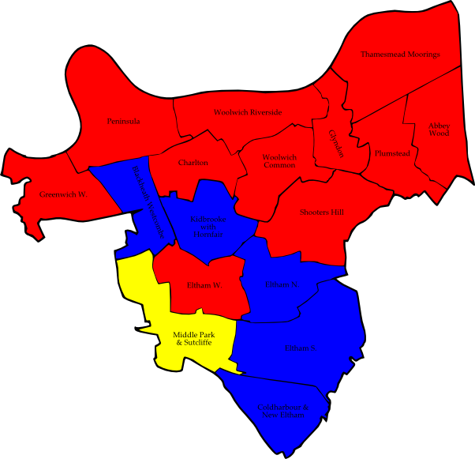
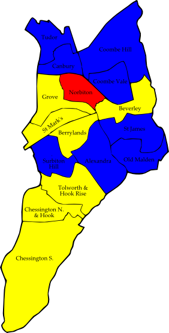
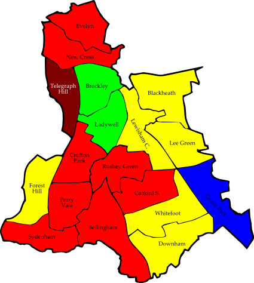
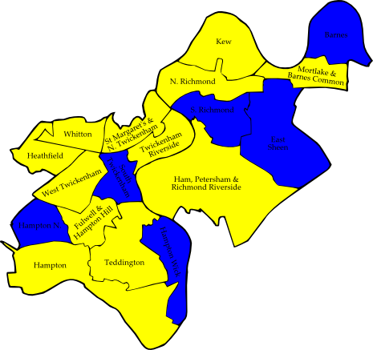
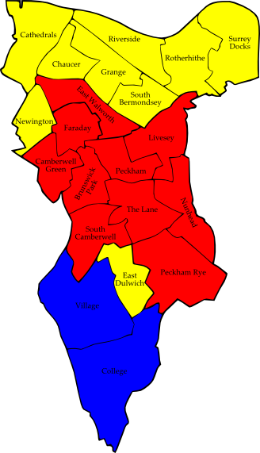
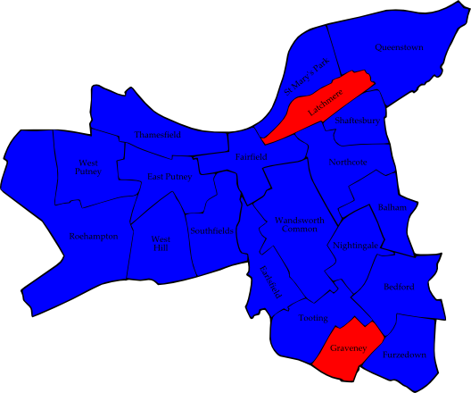

2.1 Bexley
EDP = English Democrats Party
OS = Orange Squash
TCP = Thamesmead Community Party
Barnehurst (3)
|
William McEwen | C | 2,333 |
| Richard Gillespie | C | 2,223 |
| Simon Windle | C | 2,188 |
| Charan Gill | Lab | 735 |
| John Husband | Lab | 685 |
| Derek Steedman | Lab | 653 |
| Barrie Thomas | UKIP | 513 |
| Maurice Morpurgo | LD | 411 |
Belvedere (3)
|
David Leaf | C | 1,287 |
| Daniel Francis | Lab | 1,268 |
| John Fuller | C | 1,256 |
| Janet White | Lab | 1,168 |
| Gooroodev Nangon | C | 1,050 |
| John Pegg | Lab | 1,041 |
| Lesley Morpurgo | LD | 439 |
Blackfen and Lamorbey (3)
|
Brian Beckwith | C | 1,830 |
| Peter Craske | C | 1,804 |
| Katherine Perrior | C | 1,777 |
| Michael Barnbrook | UKIP | 821 |
| John Dunford | UKIP | 669 |
| George Wright | UKIP | 664 |
| Carole Borella | Lab | 494 |
| Bernard Justham | Lab | 440 |
| Josephine Chodha | Lab | 437 |
| Doreen La Roche | LD | 391 |
| John La Roche | LD | 363 |
| Peter Scopes | LD | 355 |
Blendon and Penhill (3)
|
Margaret Cammish | C | 2,445 |
| Graham D'Amiral | C | 2,364 |
| Nicholas O'Hare | C | 2,287 |
| Michael Jaques | LD | 450 |
| David Prior | Lab | 441 |
| Kaye Cudmore | LD | 430 |
| John Cudmore | LD | 415 |
| Gerda Slater | Lab | 400 |
| Stuart Slater | Lab | 387 |
Brampton (3)
|
Ronald French | C | 2,596 |
| Teresa O'Neill | C | 2,537 |
| John Wilkinson | C | 2,406 |
| Joanne Browning | Lab | 802 |
| Christopher Kirby | Lab | 734 |
| John Perry | Lab | 710 |
| Barry Standen | LD | 531 |
| Susan Hall | LD | 515 |
| Peggy Wagstaff | LD | 431 |
| William Jenner | UKIP | 404 |
Christchurch (3)
|
Roy Ashmole | C | 2,205 |
| Ian Clement | C | 2,188 |
| Leonard Newton | C | 2,098 |
| Stephanie David | Lab | 733 |
| Floyd Millen | Lab | 633 |
| Peter West | Lab | 621 |
| Maureen Hall | LD | 513 |
| David Hall | LD | 501 |
| Betty Lockington | LD | 443 |
Colyers (3)
|
Christopher Brockwell | C | 1,506 |
| David Cammish | C | 1,415 |
| David Hurt | C | 1,349 |
| Ronald Browning | Lab | 1,175 |
| Patricia Ball | Lab | 1,165 |
| Peter Kilner | Lab | 1,163 |
| Sally Briant | Ind | 397 |
| Dianne Joyce | Ind | 387 |
| Joanne Wilfort | Ind | 321 |
| Angela Thick | LD | 293 |
Crayford (3)
|
Geraldene Lucia-Hennis | C | 1,378 |
| Howard Marriner | C | 1,345 |
| Melvin Seymour | C | 1,286 |
| John Shepheard | Lab | 1,180 |
| Tonya Kelsey | Lab | 1,147 |
| Trevor Perrin | Lab | 1,058 |
| Stephen James | BNP | 786 |
| Amanda Buckley | LD | 430 |
Cray Meadows (3)
|
Cheryl Bacon | C | 1,947 |
| Rosaline Downing | C | 1,903 |
| Donald Massey | C | 1,865 |
| Helen Cash | Lab | 1,065 |
| Stefano Borella | Lab | 1,019 |
| Michael O'Neill | Lab | 995 |
| Barry Parfett | Ind | 640 |
| Elaine Cheeseman | Ind | 631 |
| Laurence Williams | Ind | 611 |
Danson Park (3)
|
Linda Bailey | C | 2,011 |
| Sharon Massey | C | 2,002 |
| John Waters | C | 1,985 |
| James McVeigh | LD | 915 |
| Paul Hurren | LD | 875 |
| Tejinder Singh Aulakh | LD | 815 |
| Alan Scutt | Lab | 466 |
| Peter Hollamby | Lab | 453 |
| Linda Husband | Lab | 453 |
East Wickham (3)
|
Alfred Catterall | C | 1,362 |
| Michael Tarrant | C | 1,340 |
| James Hunt | C | 1,234 |
| John Lawrenson | Lab | 937 |
| Richard Everitt | Lab | 860 |
| Sylvia Malt | Lab | 833 |
| Anthony Pickett | LD | 681 |
| David Sexton | LD | 604 |
| Sheila Clark | BNP | 601 |
| Surinder Singh Manak | LD | 564 |
| John-Anthony Fitzpatrick | EDP | 392 |
| Malcolm Clarke | UKIP | 289 |
| Pamela Perrin | UKIP | 211 |
| Christopher Marshall | UKIP | 209 |
Erith (3)
|
Christopher Ball | Lab | 1,066 |
| Margaret O'Neill | Lab | 939 |
| Bernard Clewes | C | 884 |
| James Douglas | C | 850 |
| Munir Malik | Lab | 833 |
| Priti Patel | C | 653 |
| Stephen West | Ind | 574 |
| Rita Grootendorst | Ind | 506 |
| Florence Jamieson | LD | 434 |
Falconwood and Welling (3)
|
Nigel Betts | C | 2,074 |
| Peter Catterall | C | 1,854 |
| Valerie Clark | C | 1,721 |
| James Seadon | BNP | 1,001 |
| Stephen Perfect | Lab | 640 |
| Andrew O'Gorman | LD | 593 |
| Edward Shrimpton | LD | 588 |
| Gurdeepak Singh Chaggar | LD | 540 |
| Mavis Persaud | Lab | 540 |
| Carol Pieri | Lab | 517 |
Lesnes Abbey (3)
|
John Davey | C | 1,860 |
| Margaret Hurt | C | 1,710 |
| Kirsty Duncombe | C | 1,707 |
| Ronald Brown | Lab | 1,450 |
| Samuel Blake | Lab | 1,422 |
| Corinna Huxley | Lab | 1,253 |
| Gary Cripps | OS | 583 |
| Peter Hofford | LD | 482 |
Longlands (3)
|
Gareth Bacon | C | 1,966 |
| Kenneth McAndrew | C | 1,956 |
| Michael Slaughter | C | 1,921 |
| Michael Lowe | Ind | 633 |
| Clifford Judge | Lab | 517 |
| Zoe Brooks | LD | 456 |
| Margaret Shrimpton | LD | 449 |
| Garth Pilling-Lindsell | Lab | 446 |
| Philip Scrivener | Lab | 434 |
| John Brooks | LD | 431 |
North End (3)
|
John Eastaugh | Lab | 1,093 |
| Brenda Langstead | Lab | 1,070 |
| Alan Deadman | Lab | 962 |
| Sylvia Cassells | C | 637 |
| Bernard Gillespie | C | 601 |
| Simon Goding | Ind | 553 |
| Edgar Silvester | C | 498 |
| John Bowles | BNP | 481 |
| William Shrimpton | LD | 269 |
Northumberland Heath (3)
|
Helen Fuller | C | 1,975 |
| Peter Reader | C | 1,913 |
| Alex Sawyer | C | 1,806 |
| Geoffrey Hacker | Lab | 1,280 |
| Kathryn Smith | Lab | 1,236 |
| Edward Akuamoah-Boateng | Lab | 1,202 |
| Paul Bargery | LD | 496 |
St Mary's (3)
|
Colin Campbell | C | 2,596 |
| Alan Downing | C | 2,546 |
| Colin Tandy | C | 2,472 |
| Joseph Riches | Lab | 493 |
| Angela Nurse | LD | 491 |
| Broderick Bassett | Lab | 487 |
| Teresa Pearce | Lab | 481 |
| David Nicolle | LD | 454 |
| Shule Basaran | LD | 413 |
St Michael's (3)
|
Joseph Pollard | C | 2,062 |
| Raymond Sams | C | 1,907 |
| Matthew Scott | C | 1,890 |
| Wendy Perfect | Lab | 1,101 |
| Grant Blowers | Lab | 1,090 |
| Matthew Murphy | Lab | 1,023 |
| Janette Codd | LD | 457 |
| Colin Wright | LD | 450 |
| Philip Codd | LD | 413 |
Sidcup (3)
|
Aileen Beckwith | C | 2,127 |
| Jacqueline Evans | C | 2,099 |
| June Slaughter | C | 2,090 |
| Graham Holland | Ind | 1,067 |
| Robert Griffiths | Ind | 966 |
| David Gorton | Ind | 850 |
| Colin Dawes | Lab | 532 |
| Robert Bedwell | Lab | 523 |
| Doreen Ives | Lab | 470 |
Thamesmead East (3)
|
Sandra Bauer | Lab | 1,071 |
| Harbans Singh Buttar | Lab | 983 |
| Harry Persaud | Lab | 956 |
| Jenny Bellinger | TCP | 628 |
| Jeremy Cotton | TCP | 573 |
| Anthony Cusack | TCP | 544 |
| Irene Reader | C | 483 |
| Irma Nangon | C | 438 |
| Philip Read | C | 228 |
Consolidated Results — Bexley
|
Conservative | 37,564 | 50.0% | 54 councillors |
| Labour | 18,529 | 24.6% | 9 councillors |
| Liberal Democrat | 8,732 | 11.6% | |
| Independents | 3,864 | 5.1% | |
| British National Party | 2,869 | 3.8% | |
| UK Independence Party | 2,027 | 2.7% | |
| Thamesmead Community Party | 628 | 0.8% | |
| Orange Squash | 583 | 0.8% | |
| English Democrats Party | 392 | 0.5% | |
2.2 Bromley
Bickley (3)
|
Colin Bloom | C | 3,277 |
| Gordon Jenkins | C | 3,242 |
| Catherine Rideout | C | 3,228 |
| Martin Milliner | LD | 791 |
| Brian Taylor | LD | 789 |
| Philippa Coyte-Woods | LD | 737 |
| Christopher Clough | Lab | 473 |
| Velma Campbell | Lab | 444 |
| Arthur Johnson | Lab | 418 |
Biggin Hill (2)
|
Gordon Norrie | C | 1,708 |
| Julian Benington | C | 1,651 |
| Geoffrey Gostt | LD | 1,476 |
| Bob Shekyls | LD | 1,426 |
| Patrick Collins | Lab | 107 |
| Christopher Price | Lab | 107 |
Bromley Common and Keston (3)
|
Stephen Carr | C | 3,012 |
| Ruth Bennett | C | 2,948 |
| Alexa Michael | C | 2,939 |
| Sheila Blackburn | LD | 705 |
| Alan Carter | LD | 704 |
| Mark Gill | LD | 588 |
| Adrian Appley | Grn | 466 |
| Tom Ellis | Lab | 374 |
| Ewan Buck | Lab | 371 |
| Kelly Galvin | Lab | 365 |
Bromley Town (3)
|
Stephen Maly | C | 2,190 |
| David Hastings | C | 2,157 |
| Christopher Phillips | C | 2,083 |
| Peter Brooks | LD | 1,570 |
| David Dear | LD | 1,429 |
| Timothy Sowter | LD | 1,372 |
| Simon Anstey | Grn | 478 |
| Robert Armstrong | Lab | 447 |
| Alison Scammell | Grn | 438 |
| Jacob Gordon | Grn | 431 |
| Michael Gibson | Lab | 406 |
| Richard Comaish | Lab | 376 |
Chelsfield and Pratts Bottom (3)
|
Julian Grainger | C | 3,008 |
| Robert Evans | C | 2,990 |
| Samaris Huntington-Thresher | C | 2,884 |
| Duncan Borrowman | LD | 2,003 |
| Grace Goodlad | LD | 1,951 |
| Michael Hall | LD | 1,856 |
| Ann Garrett | Grn | 480 |
| Gillian Collins | Lab | 274 |
| Christopher Purnell | Lab | 242 |
| John Waterworth | Lab | 242 |
Chislehurst (3)
|
Kathleen Boughey | C | 2,986 |
| Eric Bosshard | C | 2,910 |
| Brian Toms | C | 2,709 |
| John Hemming-Clark | Ind | 903 |
| Ian Magrath | LD | 651 |
| Sam Webber | LD | 557 |
| Frances Speed | Grn | 532 |
| Rosemary Oliver | LD | 515 |
| Stuart Reid | Lab | 457 |
| Christian Mole | Lab | 425 |
| Gareth Wretham | Lab | 307 |
Clock House (3)
|
Reginald Adams | LD | 1,707 |
| Sarah Phillips | C | 1,667 |
| Benjamin Abbotts | LD | 1,663 |
| Nicholas Milner | C | 1,586 |
| Johanna Christie-Smith | LD | 1,478 |
| Dorothy Laird | C | 1,454 |
| Janet Ambrose | Lab | 925 |
| Kevin Brooks | Lab | 826 |
| Margaret Toomey | Grn | 815 |
| Joshua King | Lab | 793 |
Copers Cope (3)
|
Michael Tickner | C | 2,904 |
| Stephen Wells | C | 2,895 |
| Russell Mellor | C | 2,848 |
| Kay Stocker | LD | 851 |
| Julian Critchley | LD | 837 |
| Paul Nash | LD | 824 |
| Kathleen Lucey | Lab | 563 |
| Belinda Price | Lab | 558 |
| John Dempster | Lab | 541 |
Cray Valley East (3)
|
David McBride | LD | 1,595 |
| Martin Curry | LD | 1,542 |
| Brenda Thompson | LD | 1,522 |
| Damian Crawford | C | 1,297 |
| John Ince | C | 1,252 |
| Jengiz Ali | C | 1,102 |
| John Wright | Lab | 518 |
| Gary Hayes | Lab | 498 |
| James Flack | Lab | 491 |
Cray Valley West (3)
|
Colin Willetts | Lab | 1,299 |
| Judith Ellis | C | 1,298 |
| Harry Stranger | C | 1,174 |
| Susan Gibbens | Lab | 1,106 |
| John Holbrook | Lab | 1,085 |
| Michael Bignell | LD | 1,083 |
| Lalit Khanna | C | 1,000 |
| Harold Barker | LD | 993 |
| Mark Moran | LD | 930 |
| Ian Moore | BNP | 853 |
| Thomas Foley | UKIP | 358 |
Crystal Palace (2)
|
Christopher Gaster | LD | 1,345 |
| John Canvin | LD | 1,255 |
| Claire Francis | Lab | 680 |
| Richard Williams | Lab | 674 |
| Nicholas Fordham | C | 435 |
| Michael Kingsford | C | 388 |
| Karen Moran | Grn | 388 |
Darwin
|
Peter Bloomfield | C | 1,327 |
| Caroline De Vivo | LD | 294 |
| John Lewis | Lab | 94 |
Farnborough and Crofton (3)
|
Jennifer Hillier | C | 3,591 |
| Charles Joel | C | 3,414 |
| Timothy Stevens | C | 3,245 |
| Barbara Moran | LD | 1,038 |
| Vivian Ross | LD | 1,017 |
| Leo Staggs | LD | 875 |
| Kathryn Taylor | Ind | 743 |
| Malcolm Barker | Lab | 276 |
| Bryan Gay | Lab | 259 |
| Harvey Guntrip | Lab | 219 |
| Ken Tracey | UKIP | 38 |
Hayes and Coney Hall (3)
|
Thelma Manning | C | 3,799 |
| Graham Arthur | C | 3,586 |
| Neil Reddin | C | 3,423 |
| Mary Morgan | LD | 862 |
| Tudor Griffiths | LD | 856 |
| Steven Daniell | LD | 793 |
| David Cordell | Lab | 569 |
| Katharine Head | Lab | 511 |
| Laura Padoan | Lab | 488 |
Kelsey and Eden Park (3)
|
Peter Dean | C | 2,678 |
| Rebekah Gilbert | C | 2,608 |
| Denise Reddin | C | 2,478 |
| Jeffrey Foulger | LD | 1,148 |
| Roderick Reed | Ind | 1,054 |
| Anthony Payton | LD | 904 |
| Michael Caine | LD | 903 |
| Laurence Wright | Ind | 850 |
| Shabana Benson | Ind | 767 |
| Therese Curran | Lab | 504 |
| Richard Watts | Lab | 454 |
| Clinton McCree | Lab | 424 |
Mottingham and Chislehurst North (2)
|
Roger Charsley | C | 1,404 |
| Charles Rideout | C | 1,315 |
| Barry Beattie | Lab | 660 |
| Donovan Lindsay | Lab | 554 |
| Tony Hazell | BNP | 416 |
| John Houghton | LD | 365 |
| Jane Coyte | LD | 357 |
Orpington (3)
|
Peter Hobbins | C | 2,749 |
| William Huntington-Thresher | C | 2,674 |
| Pauline Tunnicliffe | C | 2,627 |
| Jennifer Powell | LD | 2,363 |
| Gerda Loosemore-Reppen | LD | 2,279 |
| Helen Rabbatts | LD | 2,245 |
| Derrick Parker | Lab | 268 |
| Christopher Taylor | Lab | 244 |
| Jeeva Rangasamy | Lab | 241 |
Penge and Cator (3)
|
John Getgood | Lab | 1,727 |
| Peter Fookes | Lab | 1,714 |
| Karen Roberts | Lab | 1,695 |
| Thomas Papworth | LD | 1,525 |
| Emma Price | LD | 1,512 |
| Sonia Whitaker | LD | 1,455 |
| Paul Harding | C | 1,305 |
| Hamid Mughal | C | 1,100 |
| Ismail Gulaid | C | 1,099 |
Petts Wood and Knoll (3)
|
Anthony Owen | C | 3,757 |
| Douglas Auld | C | 3,688 |
| Simon Fawthrop | C | 3,474 |
| Eileen Edwards | LD | 1,313 |
| Michael Oldman | LD | 981 |
| Dawn Bignell | LD | 501 |
| Peter Lisle | Lab | 323 |
| John Parks | Lab | 255 |
| Roy Shufflebotham | Lab | 252 |
Plaistow and Sundridge (3)
|
Peter Morgan | C | 2,649 |
| Colin Smith | C | 2,601 |
| Michael Turner | C | 2,543 |
| Lennard Woods | LD | 1,294 |
| Michael Deves | LD | 1,292 |
| Toby Philpott | LD | 1,258 |
| Andrew Barber | Lab | 481 |
| Peter Saunders | Lab | 459 |
| Julian Richards | Lab | 420 |
| Gillian Windall | Grn | 403 |
| John Street | Grn | 220 |
Shortlands (2)
|
Ernest Noad | C | 2,443 |
| George Taylor | C | 2,375 |
| Richard Hart | Lab | 493 |
| Glyn Alsworth | Lab | 490 |
| Hilary Gaster | LD | 417 |
| Mary Hurworth | LD | 393 |
West Wickham (3)
|
Carole Hubbard | C | 3,763 |
| Brian Humphreys | C | 3,665 |
| Nicholas Bennett | C | 3,554 |
| Ivor Lane | LD | 800 |
| Graham Radford | LD | 778 |
| Shirley Homewood | LD | 720 |
| Gary Kent | Lab | 592 |
| Alan Burn | Lab | 585 |
| Michael Simms | Lab | 554 |
Consolidated Results — Bromley
|
Conservative | 53,247 | 54.1% | 49 councillors |
| Liberal Democrat | 25,196 | 25.6% | 7 councillors |
| Labour | 12,104 | 12.3% | 4 councillors |
| Green Party | 3,562 | 3.6% | |
| Independents | 2,700 | 2.7% | |
| British National Party | 1,269 | 1.3% | |
| UK Independence Party | 396 | 0.4% | |
2.3 Croydon
Comm = Communist Party of Britain
CRACC = Croydon Ratepayers Against Croydon Council
PAA = Pensions Action Alliance
PCh = People's Choice
Addiscombe (3)
|
Andrew Price | C | 1,948 |
| Maria de la Huerta | C | 1,842 |
| Russell Jackson | C | 1,793 |
| Sean Fitzsimons | Lab | 1,672 |
| Amanda Campbell | Lab | 1,653 |
| Mark Watson | Lab | 1,607 |
| Mario Barnsley | Grn | 850 |
| Paul Rogers | LD | 760 |
Ashburton (3)
|
Lindsay Frost | C | 2,513 |
| Edwin Arram | C | 2,431 |
| Avril Slipper | C | 2,390 |
| Rona MacDonald | Lab | 1,057 |
| Peter Spalding | Lab | 971 |
| Jitinder Singh | Lab | 904 |
| Bernice Goldberg | Grn | 628 |
| Nirma Ramful | LD | 550 |
| Jeanette Nathan | UKIP | 336 |
Bensham Manor (3)
|
Nanoo Rajendran | Lab | 1,846 |
| Paula Shaw | Lab | 1,805 |
| Greta Sohoye | Lab | 1,670 |
| Roger Taylor | C | 1,117 |
| John Tooze | C | 861 |
| Alan Winborn | C | 774 |
| Susan Parsons | Grn | 581 |
| James Feisenberger | UKIP | 305 |
Broad Green (3)
|
Stuart Collins | Lab | 1,777 |
| Mike Selva | Lab | 1,660 |
| Manju Shahul-Hameed | Lab | 1,576 |
| Ian Parker | C | 1,076 |
| Patrick Ratnaraja | C | 1,073 |
| Jill Thomas | C | 975 |
| Syed Mohiuddin | LD | 513 |
| Peter Latham | Comm | 177 |
Coulsdon East (3)
|
Christopher Wright | C | 3,393 |
| Brian Udell | C | 3,321 |
| Theresa Lenton | C | 3,102 |
| Ian Atkins | LD | 2,124 |
| Simon Hargrave | LD | 1,817 |
| Patricia Knight | LD | 1,765 |
Coulsdon West (3)
|
David Osland | C | 2,706 |
| Gavin Barwell | C | 2,685 |
| Brian Cakebread | C | 2,640 |
| Avril Bristow | LD | 775 |
| Jean Callen | LD | 745 |
| Brian Glaister | LD | 627 |
| Sarah Ward | Lab | 481 |
| Richard Ackland | Lab | 475 |
| Lee Findell | Lab | 435 |
| Andrew Lindsay | Grn | 429 |
| Sheila Lockwood | PCh | 168 |
Croham (3)
|
Maria Gatland | C | 2,590 |
| Michael Neal | C | 2,418 |
| Jason Perry | C | 2,378 |
| Michael Bishopp | LD | 861 |
| Sheelagh Crampton | LD | 739 |
| Laura Doughty | Lab | 722 |
| Paul Anderson | Lab | 697 |
| Edward Maxfield | LD | 609 |
| Stephen Harris | Grn | 569 |
| James Mburu | Lab | 566 |
| William Bailey | UKIP | 206 |
| Evelyn Lane | PCh | 113 |
| Debra Cannam | PCh | 112 |
| Mark Samuel | PCh | 96 |
Fairfield (3)
|
Vidhi Mohan | C | 2,070 |
| Susan Winborn | C | 2,042 |
| David Fitze | C | 2,010 |
| Peter Horah | Lab | 870 |
| Yvonne Gosling | Lab | 834 |
| Dominic O'Donnell | Lab | 807 |
| Jill George | LD | 640 |
| Julia Barnsley | Grn | 629 |
| Edwin Wigley | UKIP | 226 |
| John Cartwright | Loony | 200 |
Fieldway (2)
|
Simon Hall | Lab | 949 |
| Carole Bonner | Lab | 826 |
| Matthew Bedford | BNP | 692 |
| Roland Petit | C | 667 |
| Andrew Stranack | C | 477 |
| Lynnda Robson | UKIP | 213 |
| Heather Jefkins | LD | 180 |
Heathfield (3)
|
Margaret Mead | C | 3,076 |
| Helen Pollard | C | 2,936 |
| Enley Taylor | C | 2,749 |
| Sarah Jones | Lab | 761 |
| Stephen Cleary | LD | 654 |
| Moira O'Donnell | Lab | 642 |
| Romney Tansley | Lab | 598 |
| Peter Ladanyi | LD | 529 |
| Andrew Paice | UKIP | 411 |
Kenley (3)
|
Janice Buttinger | C | 2,631 |
| Stephen O'Connell | C | 2,530 |
| Steven Hollands | C | 2,523 |
| Angela Catta | LD | 757 |
| Tom Voute | Grn | 729 |
| Linda Evans | LD | 650 |
| Joy Prince | Lab | 461 |
| Mohammed Mir | Lab | 406 |
New Addington (2)
|
Brenda Kirby | Lab | 1,356 |
| George Ayres | Lab | 1,257 |
| Peter Kirby | C | 1,046 |
| Anthony Pearson | C | 1,040 |
| Clifford Le May | BNP | 772 |
| Ian Edwards | UKIP | 256 |
| Stephanie Offer | LD | 139 |
Norbury (3)
|
Margaret Mansell | Lab | 2,434 |
| Shafi Khan | Lab | 2,428 |
| Sherwan Chowdhury | Lab | 2,333 |
| Gloria Hutchens | C | 1,751 |
| Tirena Gunter | C | 1,679 |
| Adam Kellett | C | 1,557 |
| Leo Held | LD | 553 |
| Michael O'Sullivan | Grn | 511 |
Purley (3)
|
Graham Bass | C | 2,768 |
| Derek Millard | C | 2,631 |
| Donald Speakman | C | 2,488 |
| Kathleen Austin | LD | 786 |
| Colin Bagnall | Lab | 700 |
| Gordon Burnett | LD | 670 |
| Simon Desorgher | Grn | 599 |
| Maria Khan | Lab | 528 |
| Suren Pandita-Gunawardena | Lab | 495 |
| Kathleen Garner | UKIP | 280 |
Sanderstead (3)
|
Lynne Hale | C | 3,567 |
| Timothy Pollard | C | 3,470 |
| Yvette Hopley | C | 3,447 |
| Anne Howard | LD | 570 |
| Susan Gauge | LD | 562 |
| Daniel Harvey | Lab | 429 |
| Barry Buttigieg | Lab | 393 |
| Tejinder Singh Madhar | Lab | 369 |
| Alan Smith | UKIP | 338 |
Selhurst (3)
|
Timothy Godfrey | Lab | 1,652 |
| Toni Letts | Lab | 1,597 |
| Gerry Ryan | Lab | 1,452 |
| Margaret Bird | C | 906 |
| Audrey Terrey | C | 893 |
| William Proudfoot | C | 861 |
| Megan Braid-Pittordou | Grn | 588 |
| Lynn Roulstone | LD | 570 |
Selsdon and Ballards (3)
|
Sara Bashford | C | 3,396 |
| Dudley Mead | C | 3,357 |
| Philip Thomas | C | 3,215 |
| John Jefkins | LD | 651 |
| Margaret Burnett | LD | 625 |
| Peter Hopson | Lab | 535 |
| Rae Goonetilleke | Lab | 451 |
| Claire Smith | UKIP | 416 |
| Olufemi Yusoof | Lab | 373 |
Shirley (3)
|
Janet Marshall | C | 3,270 |
| Richard Chatterjee | C | 2,924 |
| Michael Fisher | C | 2,888 |
| Marzia Nicodemi-Ehikioya | Ind | 1,083 |
| Norman Glass | Lab | 896 |
| Mark Justice | Lab | 869 |
| Lorraine Walters | Lab | 799 |
| Paul West | LD | 603 |
| Ian Dixon | Grn | 590 |
South Norwood (3)
|
Susan Bennett | C | 1,670 |
| Luke Clancy | C | 1,523 |
| Jane Avis | Lab | 1,492 |
| Kathy Bee | Lab | 1,393 |
| Andrew Bagnall | Lab | 1,385 |
| Mohammed Quadir | C | 1,271 |
| Tim Fernandes-Bonnar | Grn | 717 |
| Julie Hardy-McBride | LD | 684 |
| Jan Perry | LD | 616 |
| Brian Hutchings | UKIP | 233 |
Thornton Heath (3)
|
Pat Clouder | Lab | 1,644 |
| Matthew Kyemereh | Lab | 1,427 |
| Louisa Woodsley | Lab | 1,421 |
| Florence Evans | C | 902 |
| Melanie Hutchens | C | 833 |
| Jonathan Cope | LD | 819 |
| Michele O'Connell | C | 776 |
| Stephen Dering | LD | 697 |
| Tomas Howard-Jones | LD | 638 |
| Michael Tink | Grn | 408 |
Upper Norwood (3)
|
Robert Askey | C | 1,650 |
| Patrick Ryan | Lab | 1,637 |
| George Filbey | C | 1,566 |
| Alisa Flemming | Lab | 1,561 |
| Clare Hilley | C | 1,489 |
| Ian Payne | Lab | 1,461 |
| Anna Martin | Grn | 732 |
| Shasha Khan | Grn | 729 |
| Thomas Real | Grn | 527 |
| Joan Tyndall | UKIP | 185 |
Waddon (3)
|
Anthony Harris | C | 2,335 |
| Jonathan Driver | C | 2,285 |
| Simon Hoar | C | 2,215 |
| Alison Butler | Lab | 2,040 |
| Charlotte McAree | Lab | 1,973 |
| Paul Smith | Lab | 1,942 |
| Mary Davey | Grn | 485 |
| Valerie Hargrave | LD | 402 |
| Geoffrey Gauge | LD | 395 |
| Eileen Daisley | PAA | 135 |
| Alan Crawley | PAA | 133 |
| Jean Crawley | PAA | 117 |
West Thornton (3)
|
Raj Chandarana | Lab | 1,660 |
| Bernadette Khan | Lab | 1,521 |
| Mike Mogul | Lab | 1,387 |
| Christina Blair | C | 1,115 |
| Mehmet Bezginsoy | C | 919 |
| Bilgen Duven | C | 916 |
| Mahmud Ahsanollah | LD | 590 |
| Santheya Natarajan | Grn | 539 |
Woodside (3)
|
Karen Jewitt | Lab | 1,463 |
| Anthony Newman | Lab | 1,415 |
| Paul Scott | Lab | 1,225 |
| Benjamin Grainger | C | 1,178 |
| Desmond Wright | C | 1,059 |
| Stephen Ghero | C | 987 |
| Patricia West | LD | 597 |
| Ivonne Fernandes-Bonnar | Grn | 581 |
| David Young | PAA | 271 |
| Colin Cole | CRACC | 229 |
| Daphne Akeroyd | PAA | 211 |
| John Akeroyd | PAA | 168 |
Consolidated Results — Croydon
|
Conservative | 49,851 | 45.1% | 43 councillors |
| Labour | 28,534 | 25.8% | 27 councillors |
| Liberal Democrat | 14,778 | 13.4% | |
| Green Party | 10,165 | 9.2% | |
| UK Independence Party | 3,405 | 3.1% | |
| British National Party | 1,464 | 1.3% | |
| Independent | 1,083 | 1.0% | |
| Pensions Action Alliance | 406 | 0.4% | |
| People's Choice | 281 | 0.3% | |
| Croydon Ratepayers Against Croydon Council | 229 | 0.2% | |
| Monster Raving Loony Party | 200 | 0.2% | |
| Communist Party of Britain | 177 | 0.2% | |
2.4 Greenwich
CPA = Christian Peoples Alliance
TCP = Thamesmead Community Party
Abbey Wood (3)
|
Clive Mardner | Lab | 1,292 |
| Stephen Offord | Lab | 1,191 |
| Jagir Kaur Sekhon | Lab | 1,121 |
| Thomas Headon | LD | 764 |
| Bonnie Soanes | LD | 696 |
| June Milner | Ind | 624 |
| Eder Nteyoho | LD | 622 |
| Ismail Danesi | Ind | 612 |
| Anthony Ward | Ind | 593 |
| Emily Head | C | 519 |
| Jennifer Jones | C | 513 |
| Malcolm Reid | C | 486 |
Blackheath Westcombe (3)
|
Geoffrey Brighty | C | 1,496 |
| Alexander Wilson | C | 1,492 |
| Alexander Grant | Lab | 1,461 |
| Jean Bloch | Lab | 1,383 |
| Peter Whittle | C | 1,355 |
| Silke Thomson-Pottebohm | Lab | 1,232 |
| Trevor Allman | Grn | 801 |
| Michael Smart | LD | 655 |
| Christopher Smith | LD | 624 |
| Roger Spence | LD | 607 |
Charlton (3)
|
Janet Gillman | Lab | 1,638 |
| Allan MacCarthy | Lab | 1,494 |
| Gary Parker | Lab | 1,316 |
| Philip Connolly | Grn | 697 |
| Daniel Cocker | C | 676 |
| David Sharman | Grn | 671 |
| Hugh O'Leary | C | 569 |
| Arthur Hayles | Grn | 544 |
| John Letizia | C | 519 |
| Justine McGuinness | LD | 476 |
| Claire Steves | LD | 445 |
| Neil Stockley | LD | 388 |
| David Warwicker | UKIP | 255 |
| Peter Vickers | CPA | 122 |
Coldharbour and New Eltham (3)
|
John Hills | C | 1,942 |
| Amanda Brinkhurst | C | 1,877 |
| Christopher Taylor | C | 1,809 |
| Penelope Daniel | Lab | 1,000 |
| David Reader | Lab | 949 |
| Julie Grimble | Lab | 911 |
| Clifford Adams | UKIP | 566 |
| Emma Lewis | LD | 483 |
| Doreen Mooney | LD | 469 |
| Paul Gentry | LD | 431 |
Eltham North (3)
|
Spencer Drury | C | 2,344 |
| Dermot Poston | C | 2,164 |
| Nigel Fletcher | C | 2,096 |
| Maresa Kingston | Lab | 1,220 |
| Christine Walker | Lab | 1,165 |
| Janice Marnham | Lab | 1,084 |
| Edward Randall | LD | 1,083 |
| Anthea Gent | LD | 1,015 |
| Judith Spence | LD | 871 |
| Arnold Tarling | UKIP | 634 |
| Marek Powley | Grn | 584 |
Eltham South (3)
|
Eileen Glover | C | 1,668 |
| Peter King | C | 1,611 |
| Elizabeth Truss | C | 1,443 |
| Mark Pattenden | LD | 1,386 |
| Michael Lewis | LD | 1,284 |
| Elliot Shubert | LD | 1,168 |
| John Littlefield | Lab | 720 |
| Terence Malone | Lab | 693 |
| John Twidale | Lab | 667 |
Eltham West (3)
|
William Freeman | Lab | 1,429 |
| Michael Hayes | Lab | 1,409 |
| Raymond Walker | Lab | 1,322 |
| Roberta Woods | BNP | 976 |
| Albert Frost | C | 580 |
| Catherine Culbert | C | 552 |
| Michael Hoskin | C | 539 |
| Eileen Cox | LD | 371 |
| Gerald McWilliams | Ind | 332 |
| Yvonne Nicholls | LD | 284 |
| Mutiu Olukoga | Ind | 281 |
| Thomas Ward | LD | 257 |
Glyndon (3)
|
Donald Austen | Lab | 1,796 |
| Paul Tyler | Lab | 1,597 |
| John Wakefield | Lab | 1,459 |
| Leonie Barron | LD | 665 |
| Martin Jenkins | LD | 595 |
| Anthony Greville | LD | 532 |
| David Branch | C | 530 |
| Sean Pearson | C | 522 |
| Richard Shackleton | C | 468 |
Greenwich West (3)
|
Maureen O'Mara | Lab | 1,406 |
| David Grant | Lab | 1,304 |
| Margaret Mythen | Lab | 1,189 |
| Suzanne Miller | LD | 1,106 |
| Andrew Smith | LD | 1,034 |
| Edward Hill | LD | 920 |
| Robin Stott | Grn | 754 |
| Simon Gallie | C | 691 |
| Robert Dougans | C | 632 |
| Asif Bhatti | C | 552 |
Kidbrooke with Hornfair (3)
|
Graeme Coombes | C | 1,305 |
| Norman Adams | Lab | 1,250 |
| Andy Jennings | C | 1,235 |
| David Gardner | Lab | 1,220 |
| Ann Jefferson | Lab | 1,194 |
| Jackie Doyle-Price | C | 1,187 |
| Jasmine Deol | Grn | 503 |
| Mary Green | LD | 484 |
| Ian Dickson | LD | 476 |
| Harry Potter | LD | 408 |
Middle Park and Sutcliffe (3)
|
Brian Woodcraft | LD | 1,461 |
| Clare Morris | Lab | 1,404 |
| Paul Webbewood | LD | 1,368 |
| Peter Challis | Lab | 1,367 |
| Ian Gerrard | LD | 1,357 |
| Barry Taylor | Lab | 1,283 |
| Janine Stevens | C | 817 |
| Ryan Acty | C | 814 |
| James Ford | C | 773 |
Peninsula (3)
|
Mary Mills | Lab | 1,387 |
| Richard Quibell | Lab | 1,153 |
| Christopher Roberts | Lab | 1,125 |
| Lucy Early | Grn | 877 |
| Alexander Cunliffe | LD | 610 |
| Duncan McCourt | C | 603 |
| Robert Kerby | C | 599 |
| Rupert Wainwright | LD | 589 |
| Denys Robinson | LD | 543 |
| James Worron | C | 532 |
Plumstead (3)
|
Angela Cornforth | Lab | 1,651 |
| Kanta Patel | Lab | 1,389 |
| Sajid Jawaid | Lab | 1,380 |
| Simon Emmett | C | 808 |
| Philip Hendren | C | 767 |
| Stephen Hartigan | C | 755 |
| Steven Toole | LD | 683 |
| Biljana Glusica | LD | 514 |
| Abdul Rauf | LD | 499 |
| Harbhajan Singh | Ind | 395 |
Shooters Hill (3)
|
John Kelly | Lab | 1,589 |
| Danny Thorpe | Lab | 1,540 |
| Denise Hyland | Lab | 1,527 |
| Linda Cunningham | C | 1,409 |
| Liz Drury | C | 1,393 |
| Simon Tee | C | 1,326 |
| Sylvia Derrick-Reeve | LD | 796 |
| Edward Ottery | LD | 736 |
| Michael Westcombe | LD | 660 |
Thamesmead Moorings (3)
|
Peter Brooks | Lab | 1,338 |
| Jacqueline Smith | Lab | 1,165 |
| Peter Kotz | Lab | 1,122 |
| Toks Bailey | C | 525 |
| Julie Dixon | TCP | 525 |
| James Flynn | C | 520 |
| Laura Murphy | C | 505 |
| Craig Honeyman | TCP | 461 |
| Gary Redding | TCP | 407 |
| Lanre Joda | CPA | 379 |
| Stephen Hammond | CPA | 321 |
| Chipo Maporisa | CPA | 266 |
| Charles Soyoye | Ind | 169 |
Woolwich Common (3)
|
Beverley Jones | Lab | 1,654 |
| Rajwant Singh Sidhu | Lab | 1,537 |
| Harpinder Singh | Lab | 1,449 |
| Colin Fromings | LD | 512 |
| Graham Brinkhurst | C | 506 |
| Simon Powis | LD | 481 |
| Derek Williams | C | 471 |
| Lela Sisauri | C | 446 |
| Anthony Durham | LD | 440 |
Woolwich Riverside (3)
|
Barbara Barwick | Lab | 1,612 |
| Terry Hales | Lab | 1,483 |
| John Fahy | Lab | 1,422 |
| Elizabeth Angas | Grn | 810 |
| Susan Hardy | C | 709 |
| Christopher Jones | C | 639 |
| Stuart Barrow | C | 499 |
Consolidated Results — Greenwich
|
Labour | 23,847 | 38.1% | 36 councillors |
| Conservative | 17,128 | 27.4% | 13 councillors |
| Liberal Democrat | 11,535 | 18.5% | 2 councillors |
| Green Party | 5,026 | 8.0% | |
| Independents | 1,520 | 2.4% | |
| UK Independence Party | 1,455 | 2.3% | |
| British National Party | 976 | 1.6% | |
| Thamesmead Community Party | 525 | 0.8% | |
| Christian Peoples Alliance | 501 | 0.8% | |

| Figure 2.4: Greenwich 2006 |
2.5 Kingston upon Thames
CPA = Christian Peoples Alliance
Alexandra (3)
|
Richard Hudson | C | 1,453 |
| David Berry | LD | 1,446 |
| Ian George | C | 1,413 |
| Andrea Knowles | C | 1,404 |
| Patricia Franks | LD | 1,376 |
| Wydeeswaran Thayalan | LD | 1,331 |
| Bill Bennett | Lab | 208 |
| Lawrence Green | Lab | 205 |
| Geoff Parnell | Lab | 172 |
Berrylands (3)
|
Frances Moseley | LD | 1,555 |
| Robert Steed | LD | 1,456 |
| Rohan Yoganathan | LD | 1,400 |
| Kevin Davis | C | 1,394 |
| David Booth | C | 1,347 |
| Robert Sartor | C | 1,337 |
| William Dawbarn | Grn | 329 |
| Tom Cashman | Lab | 194 |
| John Lee | Lab | 172 |
| Sheilla Bhatti | Lab | 152 |
| Sarah Daniell | CPA | 97 |
Beverley (3)
|
Donald Jordan | LD | 1,398 |
| Simon James | LD | 1,391 |
| Derek Osbourne | LD | 1,385 |
| Michael Head | C | 972 |
| Rosemary Salusbury | C | 936 |
| John Tuthill | C | 874 |
| Christopher Walker | Grn | 416 |
| Max Freedman | Lab | 284 |
| Marian Darke | Lab | 275 |
| Duncan Braithwaite | Lab | 268 |
| Douglas Gibbons | CPA | 125 |
| Diana Glencross | CPA | 93 |
| Esther Stewart | CPA | 80 |
Canbury (3)
|
Geoffrey Austin | C | 1,305 |
| David Glasspool | C | 1,254 |
| David Ryder-Mills | LD | 1,290 |
| Romana Chohan | C | 1,225 |
| Lally Malik | LD | 1,199 |
| Trevor Heap | LD | 1,143 |
| Carol Vagg | Grn | 543 |
| Norma Brewer | Lab | 403 |
| Richard Hyde | Lab | 358 |
| Christopher Priest | Lab | 347 |
| Oliver Bond | Soc | 80 |
Chessington North and Hook (3)
|
Ian Reid | LD | 1,156 |
| Sue Baker | LD | 1,143 |
| Mary Reid | LD | 1,141 |
| Andrew Day | C | 1,123 |
| Irene Suckling | C | 992 |
| Nithyalakshmy Kumpeson | C | 963 |
| Judith Cowley | Lab | 217 |
| Steve Kearney | Lab | 200 |
| Tony Cottrell | Lab | 191 |
Chessington South (3)
|
Patricia Bamford | LD | 1,272 |
| Shiraz Mirza | LD | 1,216 |
| Kevin O'Connor | LD | 1,170 |
| Daniel Goodger | C | 916 |
| Amanda Birch | C | 898 |
| Malcolm Johnson | C | 800 |
| Pauline Kearney | Lab | 277 |
| Jeffrey Hanna | Lab | 263 |
| Shaun McLoughlin | Lab | 241 |
| John Hayball | Soc Lab | 95 |
| Anthony May | CPA | 95 |
| Susan May | CPA | 79 |
Coombe Hill (3)
|
Patrick Codd | C | 1,726 |
| David Edwards | C | 1,663 |
| Eric Humphrey | C | 1,599 |
| Peter Grender | LD | 434 |
| Jonathan Oates | LD | 405 |
| Vijay Solanki | LD | 343 |
| James Humphreys | Grn | 251 |
| Roger Price | Lab | 231 |
| Wendy Malseed | Lab | 216 |
| Daljit Sehbai | Lab | 181 |
| Lydia Flower | CPA | 83 |
Coombe Vale (3)
|
Adrian Holder | C | 1,624 |
| James White | C | 1,596 |
| Robert-John Tasker | C | 1,550 |
| Julie Haines | LD | 1,028 |
| Celia Osbourne | LD | 922 |
| Leslie Jones | LD | 832 |
| Nighat Taimuri | Grn | 291 |
| Dnaiel Haynes | Lab | 276 |
| Helen Williams | Lab | 237 |
| Nora Pearce | Lab | 239 |
| Peter Flower | CPA | 222 |
| David Campanale | CPA | 152 |
| Paul Jacobs | CPA | 107 |
Grove (3)
|
Chrissie Hitchcock | LD | 1,186 |
| Rachel O'Connor | LD | 1,059 |
| Bart Ricketts | LD | 1,000 |
| Terence Bowers | C | 881 |
| David Salusbury | C | 814 |
| Michael Mentz | C | 782 |
| Terry James | Grn | 452 |
| Amanda Fitzgerald | Lab | 231 |
| Margaret Oldroyd | Lab | 205 |
| Laurie South | Lab | 203 |
Norbiton (3)
|
Steven Mama | Lab | 971 |
| Sheila Griffin | Lab | 944 |
| Penelope Shelton | LD | 925 |
| Nick Parrott | Lab | 914 |
| Rosemary Tilley | LD | 805 |
| David Bamford | LD | 788 |
| Leslie Blake | C | 463 |
| Jane Cox | C | 410 |
| Gavin French | C | 401 |
| Martin Hall | Grn | 316 |
Old Malden (3)
|
David Fraser | C | 1,555 |
| Michael Amson | C | 1,480 |
| Ian McDonald | LD | 1,471 |
| Geoffrey Clements | C | 1,464 |
| Ghazala Hayat | LD | 1,395 |
| Mary Watts | LD | 1,272 |
| Robert Kellett | Lab | 241 |
| George Pearson | Lab | 223 |
| Francis White | Lab | 191 |
| Roger Glencross | CPA | 134 |
St James (3)
|
Mary Clark | C | 1,689 |
| Howard Jones | C | 1,603 |
| Kenneth Smith | C | 1,580 |
| Iris Grender | LD | 773 |
| Robert Eyre-Brook | LD | 732 |
| Dennis Goodship | LD | 704 |
| Iris Clifford | Lab | 316 |
| Gerry Jones | Lab | 301 |
| John Knowles | Lab | 258 |
| Eleanor Glencross | CPA | 103 |
| Philippa Glencross | CPA | 83 |
St Mark's (3)
|
Elizabeth Shard | LD | 1,448 |
| Barry O'Mahony | LD | 1,403 |
| Mylvaganam Yoganathan | LD | 1,389 |
| Michael Burden | C | 879 |
| David Hutchinson | C | 864 |
| James Pirret | C | 844 |
| Wayne George | Grn | 388 |
| Sandra Coombs | Lab | 170 |
| Katie Hill | Lab | 163 |
| Niranjan Jayasundera | Lab | 117 |
| Mark Newell | CPA | 57 |
Surbiton Hill (3)
|
Nicholas Kilby | C | 1,578 |
| Janet Bowen-Hitchings | C | 1,570 |
| Paul Johnston | C | 1,511 |
| Adam Melville | LD | 959 |
| Helen Thorne | LD | 900 |
| Umesh Parekh | LD | 790 |
| David Barnsdale | Grn | 444 |
| David Cooper | Lab | 286 |
| Michael Cowley | Lab | 245 |
| Rosemary Vase | Lab | 243 |
| Kenneth Scrimshaw | CPA | 97 |
Tolworth and Hook Rise (3)
|
Rolson Davies | LD | 1,724 |
| Vicki Harris | LD | 1,619 |
| Robert Lee | LD | 1,563 |
| Susan Hudson | C | 690 |
| Mavis Cracknell | C | 682 |
| Maureen Hutchinson | C | 647 |
| Anna Ring | Lab | 215 |
| Gabriel Abulafia | Lab | 214 |
| Peter Walker | Lab | 193 |
| Doreen Scrimshaw | CPA | 101 |
Tudor (3)
|
David Cunningham | C | 1,744 |
| Dennis Doe | C | 1,609 |
| Frank Thompson | C | 1,569 |
| Fran Coyne | LD | 810 |
| Richard Lillicrap | LD | 722 |
| Susan Goodship | LD | 669 |
| Hleen Pitchforth | Grn | 564 |
| Michael Butcher | Lab | 302 |
| Brian Morris | Lab | 250 |
| Warren Kloman | Lab | 183 |
Consolidated Results — Kingston upon Thames
|
Conservative | 19,992 | 40.8% | 21 councillors |
| Liberal Democrat | 18,875 | 38.5% | 24 councillors |
| Labour | 4,822 | 9.8% | 2 councillors |
| Green Party | 3,994 | 8.2% | |
| Christian Peoples Alliance | 1,114 | 2.3% | |
| Socialist Labour Party | 95 | 0.2% | |
| Socialist Party | 80 | 0.2% | |

| Figure 2.5: Kingston upon Thames 2006 |
2.6 Lambeth
EDP = English Democrats Party
LEAP = Local Education Action by Parents
Bishop's (3)
|
Peter Truesdale | LD | 1,090 |
| Diana Braithwaite | LD | 1,020 |
| Gavin Dodsworth | LD | 869 |
| Richard Bridge | Lab | 485 |
| Rodney Reid | Lab | 427 |
| Kevin Craig | Lab | 399 |
| James Wallace | Grn | 381 |
| Carl Gibson | C | 289 |
| Jeremy Fox | C | 285 |
| Christine Holt | LEAP | 249 |
| Gareth Streeter | C | 236 |
Brixton Hill (3)
|
Steve Reed | Lab | 1,354 |
| Betty Evans-Jacas | Lab | 1,213 |
| Florence Nosegbe | Lab | 1,206 |
| Roger Baker | Grn | 714 |
| Thomas Law | Grn | 596 |
| Amarjit Chanion | Grn | 559 |
| Elsie Binder | LD | 534 |
| Duncan Brack | LD | 469 |
| Alexander Davies | LD | 406 |
| Penelope Sinclair | C | 389 |
| John Taylor | C | 351 |
| Barbara Winbourne | C | 329 |
Clapham Common (3)
|
Ruth Ling | Lab | 990 |
| Darren Sanders | LD | 964 |
| Angela Meader | LD | 914 |
| Heather Sherratt | LD | 880 |
| Steven Jones | C | 872 |
| Lloyd Milton | C | 846 |
| Alastair Hamilton | C | 840 |
| David Walker | Lab | 826 |
| Brian Whitington | Lab | 800 |
| Timothy Beaumont | Grn | 438 |
| Zana Dean | Grn | 370 |
Clapham Town (3)
|
Helen O'Malley | Lab | 1,535 |
| Nigel Haselden | Lab | 1,417 |
| Christopher Wellbelove | Lab | 1,293 |
| Bernard Gentry | C | 1,230 |
| Kelly Ben Maimon | C | 1,121 |
| Glyn Chambers | C | 1,121 |
| Albere Hanna | Grn | 534 |
| Gloria Gomez | LD | 484 |
| Roger Stewart | LD | 379 |
| Thomas Snagge | LD | 308 |
| Daniel Lambert | Soc | 62 |
| James Martin | Soc | 39 |
| John Lee | Soc | 38 |
Coldharbour (3)
|
Donatus Anyanwu | Lab | 1,299 |
| Rachel Heywood | Lab | 1,272 |
| Sharon Malley | Lab | 1,187 |
| Elkin Atwell | Grn | 486 |
| Rachel Braverman | Grn | 471 |
| Timothy Summers | Grn | 400 |
| Robert Blackie | LD | 304 |
| Sandra Lawman | LD | 279 |
| Simon Barry | C | 250 |
| Smarajit Roy | C | 242 |
| Marcus Booth | C | 222 |
| Geoffrey Bowring | LD | 216 |
Ferndale (3)
|
Paul McGlone | Lab | 1,332 |
| Sally Prentice | Lab | 1,282 |
| Neil Sabharwal | Lab | 1,205 |
| Lena Satih | LD | 572 |
| Mirza Basic | LD | 559 |
| Marcus Mayers | LD | 535 |
| Philip Georgiou | Grn | 507 |
| Helen Gentry | C | 371 |
| David Farley | C | 343 |
| Rosemary Morales | C | 331 |
Gipsy Hill (3)
|
Suzanne Poole | C | 1,402 |
| Andrew Gibson | C | 1,352 |
| Graham Pycock | C | 1,283 |
| Carol Boucher | Lab | 915 |
| Daniel Lawuyi | Lab | 838 |
| Bill Watling | Lab | 790 |
| Graham Jones | Grn | 631 |
| Vivienne Baines | LD | 521 |
| Philip Shoesmith | LD | 408 |
| Clive Parry | LD | 368 |
Herne Hill (3)
|
Rebecca Thackray | Grn | 1,359 |
| Kirsty McHugh | Lab | 1,343 |
| James Dickson | Lab | 1,314 |
| Shane Collins | Grn | 1,298 |
| Peter O'Connell | Lab | 1,205 |
| George Graham | Grn | 1,151 |
| Timothy Ayres | C | 571 |
| Charles Holroyd | C | 562 |
| Jessica Lee | C | 497 |
| Malgorzata Baker | LD | 371 |
| Malcolm Baines | LD | 353 |
| Charlotte Parry | LD | 341 |
Knight's Hill (3)
|
Jackie Meldrum | Lab | 1,358 |
| David Malone | Lab | 1,352 |
| Daniel Fitzpatrick | Lab | 1,349 |
| Geraldine Evans | LD | 1,273 |
| Jeremy Baker | LD | 1,218 |
| Saleha Jaffer | LD | 1,116 |
| Joseph Healy | Grn | 514 |
| Nicholas van der Borgh | C | 435 |
| Sheila Calder | C | 426 |
| Jane Hill | C | 417 |
Larkhall (3)
|
Peter Robbins | Lab | 1,341 |
| Christiana Valcarcel | Lab | 1,279 |
|
Neeraj Patel | Lab | 1,263 |
| Roy Jenkins | LD | 476 |
| Nicholas Maund | C | 463 |
| Laura Morland | LD | 459 |
| Christopher Whitehouse | LD | 459 |
| Helen Fensterheim | Grn | 458 |
| Judith Pattman | C | 440 |
| Michael Poole-Wilson | C | 415 |
| Noah Rutter | Grn | 346 |
Oval (3)
|
Robert Banks | LD | 1,193 |
| Faye Gray | LD | 1,044 |
| Andrew Sawdon | LD | 1,027 |
| Andy Harrop | Lab | 841 |
| Luke Herbert | Lab | 792 |
| David Prichard-Jones | Lab | 697 |
| Carlos Coke | Grn | 471 |
| Magnus Goodlad | C | 423 |
| David Haigh | C | 364 |
| Sunil Tailor | C | 340 |
| Peter Krakowiak | Grn | 323 |
| Ruby Millington | LEAP | 183 |
| Janus Polenceus | EDP | 108 |
Prince's (3)
|
Lorna Campbell | Lab | 1,586 |
| Sam Townend | Lab | 1,575 |
| Stephen Morgan | Lab | 1,546 |
| Rita Fitzgerald | LD | 901 |
| Keith Fitchett | LD | 827 |
| Charles Anglin | LD | 676 |
| Oliver Campbell | C | 556 |
| Richard Hyslop | C | 505 |
| Paul Steedman | Grn | 495 |
| Nicolas Gibbon | C | 476 |
| Eugenia Rattigan | LEAP | 153 |
| Andrew Amos | LEAP | 137 |
St Leonard's (3)
|
Clive Bennett | LD | 1,454 |
| Brian Palmer | LD | 1,373 |
| Roger Giess | LD | 1,187 |
| Robert Hill | Lab | 615 |
| Catherine Harvey | Lab | 604 |
| Rebecca Findlay | Grn | 564 |
| Richard Payne | Lab | 502 |
| Wendy Newall | C | 435 |
| John Bellak | C | 420 |
| Michelle Singleton | LEAP | 409 |
| Stephen McMenamin | C | 398 |
Stockwell (3)
|
Peter Bowyer | Lab | 1,565 |
| Pav Akhtar | Lab | 1,552 |
| Imogen Walker | Lab | 1,513 |
| Anthony Bottrall | LD | 1,321 |
| Polly Mackenzie | LD | 1,012 |
| David Hayes | LD | 1,010 |
| Thomas Tibbits | Grn | 443 |
| Sarah Barr | C | 416 |
| Elizabeth Gibson | C | 365 |
| Robert McMillan | C | 331 |
| Tracey Fevrier | LEAP | 241 |
Streatham Hill (3)
|
June Fewtrell | LD | 1,367 |
| Jeremy Clyne | LD | 1,248 |
| Ashley Lumsden | LD | 1,183 |
| Brian Cowie | Lab | 781 |
| Alex Ekumah | Lab | 739 |
| Nancy Platts | Lab | 717 |
| David Ince | Grn | 573 |
| Nazim Ali | Ind | 540 |
| Christopher Baron | Ind | 515 |
| Peter Younghusband | C | 411 |
| Susan Smith | C | 389 |
| Titus Lucas | C | 355 |
| Dorcas Rogers | LEAP | 323 |
Streatham South (3)
|
Mark Bennett | Lab | 1,725 |
| David Malley | Lab | 1,688 |
| John Kazantzis | Lab | 1,632 |
| Ahmad Ali | LD | 1,483 |
| Karen Davies | LD | 1,358 |
| Matthew Bryant | LD | 1,244 |
| Stuart Goodey | C | 453 |
| Carolena Ludwig | C | 376 |
| Christopher Sinclair | C | 369 |
| Anne Kenner | Grn | 343 |
Streatham Wells (3)
|
Julian Heather | LD | 1,484 |
| Sheila Clarke | LD | 1,449 |
| Daphne Marchant | LD | 1,360 |
| Andrew Fisher | Lab | 732 |
| Maxine James | Lab | 725 |
| Clair Wilcox | Lab | 666 |
| Hannah Rowlands | Grn | 513 |
| Lisabeth Liell | C | 365 |
| Richard Liell | C | 342 |
| Margaret Molloy | C | 332 |
Thornton (3)
|
Lib Peck | Lab | 1,494 |
| Diana Morris | Lab | 1,445 |
| Michael Hipwell | Lab | 1,354 |
| John Pindar | LD | 1,094 |
| James Sparling | LD | 946 |
| Suzanne Whitehead | LD | 925 |
| Joy Jackson | C | 480 |
| Adrian Audsley | Grn | 470 |
| Vernon de Maynard | C | 462 |
| Philippa Stone | C | 457 |
| Charles Evans | Grn | 372 |
| Louise Wakefield | Grn | 363 |
Thurlow Park (3)
|
Clare Whelan | C | 1,738 |
| John Whelan | C | 1,680 |
| Irene Kimm | C | 1,460 |
| Sharon Erdman | Lab | 762 |
| Sheila Freeman | Grn | 699 |
| Matthew Parr | Lab | 667 |
| Alan Beadnall | LD | 593 |
| Paul Teverson | Lab | 558 |
| Anton Baker | LD | 486 |
| Andrew Thurburn | LD | 420 |
| Stela Gildea | LEAP | 350 |
| Robin Lambert | UKIP | 112 |
Tulse Hill (3)
|
Marcia Cameron | Lab | 1,589 |
| Toren Smith | Lab | 1,528 |
| Adedamola Aminu | Lab | 1,514 |
| Bernard Atwell | Grn | 718 |
| James Lucas | LD | 582 |
| Robert McConnell | LD | 432 |
| Nick Perry | LD | 374 |
| Josephine Lomax | C | 353 |
| Edna Richards | C | 309 |
| Roger Lomax | C | 306 |
Vassall (3)
|
Kingsley Abrams | Lab | 1,426 |
| Liz Atkinson | Lab | 1,421 |
| Alex McKenna | Lab | 1,305 |
| Adeline Aina | LD | 1,146 |
| Steve Bradley | LD | 1,092 |
| Ernest Baidoo-Mitchell | LD | 1,044 |
| Stuart Barr | C | 369 |
| Deborah Thomas | C | 360 |
| Judith Collier | C | 341 |
| Stephen Hack | Respect | 287 |
| Abdul Chowdhury | Respect | 257 |
| Aboubakar Sako | Respect | 234 |
Consolidated Results — Lambeth
|
Labour | 25,068 | 35.4% | 39 councillors |
| Liberal Democrat | 19,207 | 27.1% | 17 councillors |
| Conservative | 12,271 | 17.3% | 6 councillors |
| Green Party | 11,311 | 16.0% | 1 councillor |
| Local Education Action by Parents | 1,908 | 2.7% | |
| Independent | 540 | 0.8% | |
| Respect — The Unity Coalition | 287 | 0.4% | |
| UK Independence Party | 112 | 0.2% | |
| English Democrats Party | 108 | 0.2% | |
| Socialist Party | 62 | 0.1% | |
2.7 Lewisham
Mayor of Lewisham
AGS = Alliance for Green Socialism
LPA = Lewisham Peoples Alliance
| | | First prefs. | Run-off |
| Steve Bullock | Lab | 22,155 | 25,129 |
| Christopher Maines | LD | 12,398 | 18,889 |
| James Cleverley | C | 10,790 | |
| Michael Keogh | Grn | 7,168 | |
| John Hamilton | Ind | 4,823 | |
| Sinna Mani | LPA | 1,366 | |
Bellingham (3)
|
Alan Hall | Lab | 878 |
| Ami Ibitson | Lab | 849 |
| Ronald Stockbridge | Lab | 780 |
| Douglas Pratt | C | 498 |
| Rosemary Pratt | C | 461 |
| Sarah Morris | LD | 455 |
| Nicholas Ashton | LD | 448 |
| Margaret Smith | C | 438 |
| Derek Gambell | LD | 383 |
| Roger Sedgley | Grn | 350 |
Blackheath (3)
|
Christopher Maines | LD | 1,088 |
| Mark Bennett | LD | 1,018 |
| Godfried Gyechie | LD | 931 |
| Andrew Brown | Lab | 895 |
| Rachael Maskell | Lab | 864 |
| Gavin Moore | Lab | 860 |
| Simon Nundy | C | 667 |
| Neil Weatherall | C | 663 |
| Darren Wall | C | 654 |
| Vanessa Gould | Grn | 446 |
| Charles Acton | Grn | 343 |
| Rasjidah St John | Grn | 343 |
Brockley (3)
|
Darren Johnson | Grn | 1,583 |
| Romayne Phoenix | Grn | 1,223 |
| Dean Walton | Grn | 1,153 |
| Obajimi Adefiranye | Lab | 928 |
| Rosemary Fooks | Lab | 907 |
| Terence Scott | Lab | 870 |
| Keith Adderley | LD | 300 |
| Anne Timson | LD | 291 |
| David Cloke | LD | 250 |
| Carolyn Freeman | C | 247 |
| Darren Larking | C | 240 |
| Maureen Wayling | C | 170 |
| Tobias Abse | AGS | 111 |
Catford South (3)
|
Robert Massey | Lab | 1,270 |
| Alan Smith | Lab | 1,135 |
| Eva Stamirowski | Lab | 1,055 |
| James Cleverley | C | 985 |
| Andrew Lee | C | 808 |
| Thomas Philpott | C | 757 |
| Nicholas Hill | LD | 645 |
| Patrick McKee | LD | 543 |
| Frances Brackley | Grn | 513 |
| Adrien Smith | LD | 422 |
Crofton Park (3)
|
Jacqueline Addison | Lab | 1,163 |
| Sylvia Scott | Lab | 898 |
| Jarman Parmar | Lab | 836 |
| Jeremy Hicks | Grn | 700 |
| Ulla Carlisle | Grn | 690 |
| James Wild | Grn | 672 |
| Stephen Locke | LD | 613 |
| Philip Akroyd | C | 604 |
| Paul Oakley | C | 564 |
| David Morpurgo | LD | 557 |
| Michael Garrard | LD | 500 |
| Gemma Townsend | C | 479 |
Downham (3)
|
Julia Fletcher | LD | 1,130 |
| Mark Morris | LD | 1,117 |
| Simon Carter | LD | 1,106 |
| Paul Jacob | Lab | 590 |
| Roy Kennedy | Lab | 586 |
| Paul Morris | Lab | 554 |
| Susannah Cleverly | C | 403 |
| Barbara Kennedy | C | 330 |
| James Cookson | C | 326 |
| Mark Cunningham | Grn | 153 |
| Lee Roach | Grn | 149 |
| Stephen Thomas | Grn | 137 |
Evelyn (3)
|
Heidi Alexander | Lab | 1,317 |
| Samuel Owolabi-Oluyole | Lab | 1,073 |
| Crada Onuegbu | Lab | 1,021 |
| Rebecca Stevens | C | 347 |
| Richard Grainger | LD | 326 |
| Corina Poore | LD | 304 |
| Hanna Fiegenbaum | Grn | 301 |
| Julian Sanders | Grn | 301 |
| Lincoln Pedzeni | C | 296 |
| Charles Turner | LD | 278 |
| Pauline Manangazira | C | 263 |
| Sydney Smith | Grn | 261 |
Forest Hill (3)
|
Alexander Feakes | LD | 1,439 |
| Arthur Peake | LD | 1,434 |
| John Russell | LD | 1,176 |
| Katherine Holtman | Lab | 846 |
| David Whiting | Lab | 754 |
| David Michael | Lab | 719 |
| Regina Purrmann | Grn | 631 |
| David Hart | C | 536 |
| Raymond Squires | C | 436 |
| Neil Tritschler | C | 410 |
| Sinna Mani | LPA | 169 |
Grove Park (3)
|
Barrie Anderson | C | 1,269 |
| David Britton | C | 1,130 |
| Hilary Downes | C | 1,017 |
| Mark Ingleby | Lab | 892 |
| David Williams | Lab | 771 |
| Eleanor Reeves | Lab | 708 |
| Ben Brooks | LD | 478 |
| Brenda Pooley | LD | 378 |
| Howard Robinson | LD | 340 |
| John Green | Grn | 299 |
| Priscilla Cotterell | Grn | 297 |
| Christine Moores | Grn | 287 |
Ladywell (3)
|
Michael Keogh | Grn | 1,497 |
| Susan Luxton | Grn | 1,428 |
| Ute Michel | Grn | 1,217 |
| Abdeslam Amrani | Lab | 1,073 |
| Pauline Morrison | Lab | 984 |
| Carl Handley | Lab | 957 |
| Christine Dinsmore | LD | 436 |
| John Kellett | LD | 361 |
| Samantha Lyster | LD | 346 |
| David Furze | C | 288 |
| Rachael Maguire | C | 288 |
| Terence Reeves | C | 224 |
Lee Green (3)
|
Paul Bentley | LD | 1,208 |
| Brian Robson | LD | 924 |
| Sven Griesenbeck | LD | 898 |
| James Mallory | Lab | 826 |
| Christine Allison | C | 818 |
| Nora Riordan | Lab | 706 |
| Ashtaq Arain | Lab | 701 |
| Joanna Britton | C | 697 |
| Gerard Ambrose | Ind | 696 |
| Brian Chipps | C | 689 |
| Anna Baker | Grn | 506 |
| Andrea Hughes | Grn | 388 |
| Gaynor Evans | Grn | 375 |
Lewisham Central (3)
|
Andrew Milton | LD | 1,340 |
| David Edgerton | LD | 1,033 |
| Edward Mark | Lab | 988 |
| Anthony Kendall | Lab | 962 |
| James Stevenson | Lab | 957 |
| Akbar Aghamiri | LD | 949 |
| Diana Birch | Grn | 523 |
| Andrew Smith | Grn | 491 |
| Maria McInnes | C | 414 |
| David Gold | C | 391 |
| Trottie Kirwan | Grn | 387 |
| Hans Hansen | C | 363 |
New Cross (3)
|
Stephen Padmore | Lab | 1,016 |
| Madeliene Long | Lab | 941 |
| Paul Maslin | Lab | 849 |
| Raymond Woolford | Ind | 439 |
| Barbara Raymond | Ind | 423 |
| Ann-Marie Powell | Ind | 397 |
| Sylvia Green | Grn | 344 |
| Deborah Stimson | Grn | 253 |
| Alexandra Rae | Grn | 247 |
| Heidi Degen | LD | 222 |
| Darrien Pierce | C | 219 |
| Linda Hawkins | LD | 214 |
| Julian Hawkins | LD | 205 |
| Deborah Wellard | C | 190 |
| James Wright | C | 178 |
Perry Vale (3)
|
John Paschoud | Lab | 1,078 |
| Susan Wise | Lab | 1,064 |
| Alan Till | Lab | 1,061 |
| Henrietta Barnes | LD | 933 |
| Jill Rutter | Grn | 784 |
| Jane Russell | LD | 783 |
| Andrew Redfern | LD | 656 |
| Mark Burstow | C | 634 |
| Roger Pawley | C | 538 |
| Gwynfor Tippett | C | 503 |
Rushey Green (3)
|
Helen Klier | Lab | 990 |
| Peggy Fitzsimons | Lab | 975 |
| John Muldoon | Lab | 845 |
| Valerie Cox | LD | 537 |
| Andrew Winter | Grn | 480 |
| Michael Abrahams | LD | 445 |
| Joan Labrom | LD | 395 |
| Robert Curtis | C | 337 |
| Michael Lee | C | 328 |
| Nicholas Ingham | Ind | 324 |
| Ruth Jeayes | C | 273 |
Sydenham (3)
|
Chris Best | Lab | 1,228 |
| Philip McDermott | Lab | 1,033 |
| Marion Nisbet | Lab | 1,010 |
| Anthony Bays | C | 800 |
| Evett McAnuff | C | 662 |
| David Lea | Grn | 653 |
| Bruce de Saram | C | 647 |
| Catherine Pluygers | LD | 568 |
| Gerald Thompson | LD | 562 |
| Vijay Naidu | LD | 484 |
Telegraph Hill (3)
|
Ian Page | Soc | 1,118 |
| Robin Cross | Lab | 997 |
| Christopher Flood | Soc | 929 |
| Joan Millbank | Lab | 856 |
| Paul Newing | Lab | 829 |
| Jessica Leech | Soc | 821 |
| Kathleen Easton | Grn | 440 |
| Nicholas Stone | Grn | 427 |
| Daniel Hudson | Grn | 413 |
| Tom Lawrence | LD | 303 |
| Lucy Penwarden | LD | 248 |
| Julie Kitson | C | 235 |
| Catherine Polling | LD | 202 |
| Russell Wellard | C | 192 |
| Judy Willson | C | 178 |
Whitefoot (3)
|
Daniel Houghton | LD | 1,346 |
| Catherine Priddey | LD | 1,209 |
| Sera Kentman | LD | 1,115 |
| Jonathan Alltimes | Lab | 894 |
| Carl Kisicki | Lab | 742 |
| Olurotimi Ogunbadewa | Lab | 741 |
| James Cleverly | C | 593 |
| Nicholas Kent | C | 438 |
| Ronald Lee | C | 435 |
| Jens Winton | UKIP | 281 |
| Alan Dingle | Grn | 240 |
| Charles Laurie | Grn | 226 |
| Simon Opie | Grn | 170 |
Consolidated Results — Lewisham
|
Labour | 17,869 | 32.6% | 26 councillors |
| Liberal Democrat | 13,427 | 24.5% | 17 councillors |
| Green Party | 10,443 | 19.1% | 6 councillors |
| Conservative | 9,894 | 18.1% | 3 councillors |
| Independents | 1,459 | 2.7% | |
| Socialist Party | 1,118 | 2.0% | 2 councillors |
| UK Independence Party | 281 | 0.5% | |
| Lewisham Peoples Alliance | 169 | 0.3% | |
| Alliance for Green Socialism | 111 | 0.2% | |

| Figure 2.7: Lewisham 2006 |
2.8 Merton
MPIR = Merton Park Independent Residents
PAA = Pensions Action Alliance
Abbey (3)
|
Diane Neil Mills | C | 1,297 |
| Marc Hanson | C | 1,282 |
| Henry Nelless | C | 1,214 |
| Susan Assinen | Lab | 1,147 |
| Michael Brunt | Lab | 1,087 |
| Laxmi Attawar | Lab | 1,074 |
| Pauline Barry | LD | 566 |
| John Houilihan | LD | 470 |
| Benjamin Walsh | Grn | 443 |
| David Willis | LD | 412 |
Cannon Hill (3)
|
William Brierly | C | 1,778 |
| Deborah Shears | C | 1,748 |
| Brian Lewis-Lavender | C | 1,681 |
| Christopher Houghton | Lab | 814 |
| Henry Macauley | Lab | 812 |
| Motiur Rahman | Lab | 678 |
| Mary O'Herlihy Nixon | LD | 450 |
| Nelson Menezes | LD | 423 |
| Christopher Oxford | LD | 416 |
| Michael Fitzgerald | PAA | 383 |
Colliers Wood (3)
|
Nicholas Draper | Lab | 1,713 |
| Sheila Knight | Lab | 1,625 |
| George Reynolds | Lab | 1,577 |
| Thomas Walsh | Grn | 1,222 |
| Rebecca Shingleton | Grn | 1,152 |
| Richard Bence | Grn | 1,068 |
| Philip Beard | C | 398 |
| Olivia Cooper | C | 374 |
| Eugene Byrne | C | 353 |
| James McKenna | LD | 262 |
Cricket Green (3)
|
Thomas Munn | Lab | 1,442 |
| Russell Makin | Lab | 1,377 |
| Judy Saunders | Lab | 1,361 |
| Frederick Day | C | 875 |
| Sarah McAlister | C | 767 |
| Liam Staff | C | 709 |
| Nicholas Pizey | LD | 448 |
Dundonald (3)
|
Corinna Edge | C | 1,328 |
| Denise March | C | 1,295 |
| David Edge | C | 1,278 |
| Kirsty Armstrong | LD | 740 |
| Stan Anderson | Lab | 664 |
| Elizabeth Daughters | Lab | 664 |
| Anthony Fairclough | LD | 648 |
| Wayne Busbridge | Lab | 640 |
| David Bezkorowajny | Grn | 601 |
| Jennifer Young | Grn | 536 |
| Andrew Falconer | LD | 525 |
Figge's Marsh (3)
|
Andrew Judge | Lab | 1,549 |
| Agatha Akyigyina | Lab | 1,512 |
| Geraldine Stanford | Lab | 1,437 |
| Gordon Southcott | C | 642 |
| John Telford | C | 635 |
| Jenny Thomas | C | 615 |
| Elaine Patton | LD | 395 |
| Graham Mills | UKIP | 232 |
Graveney (3)
|
Linda Kirby | Lab | 1,505 |
| John Dehaney | Lab | 1,500 |
| Gregory Udeh | Lab | 1,233 |
| Jeffrey Gunn | C | 675 |
| June Hayles | C | 646 |
| Gary Pritchard | C | 590 |
| Benedict Fletcher | LD | 534 |
Hillside (3)
|
Jeremy Bruce | C | 1,400 |
| David Williams | C | 1,353 |
| David Simpson | C | 1,348 |
| Juliet Boyd | LD | 439 |
| Joan Pyke-Lees | LD | 401 |
| Christine Bickerstaff | Lab | 396 |
| Simon Burall | LD | 375 |
| Nicholas Robins | Grn | 351 |
| Peter McGinity | Lab | 346 |
| Farmida Bi | Lab | 314 |
| James Stewart | UKIP | 89 |
Lavender Fields (3)
|
Mark Betteridge | Lab | 1,142 |
| Mark Allison | Lab | 1,131 |
| Edith Macauley | Lab | 1,050 |
| Stewart MacDonald | C | 520 |
| Thomas Lazur | C | 449 |
| Christina MacPherson | C | 447 |
| Michael Dees | Grn | 435 |
| Jonathan Holloway | LD | 377 |
Longthornton (3)
|
Stephen Austin | Lab | 1,687 |
| David Chung | Lab | 1,651 |
| Leighton Veale | Lab | 1,454 |
| Charles Jenkins | C | 1,170 |
| Sarah Newton | C | 1,136 |
| Philip Lenon | C | 1,113 |
| Celia Lee | LD | 381 |
| David Kay-Kreizman | PAA | 219 |
Lower Morden (3)
|
Maurice Groves | C | 1,809 |
| Ronald Wilson | C | 1,781 |
| Barbara Mansfield | C | 1,664 |
| Terence Daniels | Lab | 711 |
| Mark Inger | Lab | 682 |
| Michelle McNicol | Lab | 587 |
| Lina Akbar | LD | 402 |
Merton Park (3)
|
Karin Forbes | MPIR | 1,626 |
| Peter Southgate | MPIR | 1,619 |
| Krysia Wiliams | MPIR | 1,570 |
| Simon Hooberman | C | 1,159 |
| Simon Manara | C | 1,139 |
| John Richardson | C | 1,122 |
| Richard Nichols | Lab | 370 |
| Carl Linkson | Lab | 318 |
| Christopher Ostrowski | Lab | 299 |
| Maximilian Camplin | LD | 278 |
| Andrew Mills | UKIP | 136 |
Pollards Hill (3)
|
Martin Whelton | Lab | 1,351 |
| Zenia Squires-Jamison | Lab | 1,321 |
| Richard Williams | Lab | 1,223 |
| Steven Abrahams | C | 1,096 |
| Richard Hilton | C | 962 |
| Raymond Tindle | C | 915 |
| Iain Dysart | LD | 351 |
Ravensbury (3)
|
Stephen Alambritis | Lab | 1,311 |
| Philip Jones | Lab | 1,276 |
| Peter McCabe | Lab | 1,204 |
| Thomas Cheetham | C | 1,106 |
| Margaret Groves | C | 1,010 |
| Adrian Roberts | C | 905 |
| David Clarke | BNP | 493 |
| Violet Jennings | LD | 436 |
Raynes Park (3)
|
Margaret Brierly | C | 1,745 |
| Linda Scott | C | 1,682 |
| Roderick Scott | C | 1,640 |
| Julie Barnes | LD | 578 |
| Stephen Spence | Lab | 501 |
| Brian Paul | Lab | 489 |
| Christopher Eglington | LD | 462 |
| Nazir Malik | LD | 430 |
| Gladstone Dosunmu | Lab | 420 |
| Emma Wyatt-King | Grn | 418 |
St Helier (3)
|
Maxi Martin | Lab | 1,347 |
| Dennis Pearce | Lab | 1,246 |
| Patricia Lewis | Lab | 1,196 |
| Christopher McLaughlin | C | 974 |
| David Shellhorn | C | 931 |
| Alexander van Ingen | C | 778 |
| John Clarke | BNP | 599 |
| Michael Spacey | Ind | 583 |
| Alastair Irvine | LD | 430 |
Trinity (3)
|
David Dean | C | 1,454 |
| Krystal Miller | C | 1,444 |
| Simon Withey | C | 1,366 |
| Andrew Coles | Lab | 914 |
| Christopher Magee | Lab | 798 |
| Syed Rivzi | Lab | 757 |
| Sally Harlow | LD | 498 |
| Simon Gilhooley | LD | 497 |
| Richard Tibbetts | LD | 442 |
Village (3)
|
Samantha George | C | 2,426 |
| John Bowcott | C | 2,414 |
| Richard Chellew | C | 2,358 |
| Anne Blanchard | LD | 357 |
| Claire Glasgow | LD | 285 |
| William Bottriell | Lab | 279 |
| Andrew Harding | LD | 264 |
| Richard Taylor | Lab | 216 |
| Anil Ohri | Lab | 203 |
West Barnes (3)
|
Gillian Lewis-Lavender | C | 1,578 |
| Angela Caldara | C | 1,517 |
| Jonathan Warne | C | 1,453 |
| Mary-Jane Jeanes | LD | 1,373 |
| Helen Herd | LD | 1,317 |
| Peter Taylor | LD | 1,226 |
| Torbjorn Anderson | Lab | 458 |
| Daniel Connellan | Lab | 447 |
| Thomas Searle | Lab | 386 |
| Geoffrey Smith | PAA | 186 |
Wimbledon Park (3)
|
Oonagh Moulton | C | 1,683 |
| Stephen Kerin | C | 1,682 |
| Tariq Ahmad | C | 1,650 |
| Michael Goodman | Lab | 618 |
| Tony Mendes | Lab | 603 |
| Helen Carter | LD | 597 |
| Masood Ahmed | Lab | 551 |
| Edward Furse | LD | 510 |
| Richard Ladmore | LD | 498 |
Consolidated Results — Merton
|
Conservative | 25,113 | 40.0% | 30 councillors |
| Labour | 19,919 | 31.7% | 27 councillors |
| Liberal Democrat | 9,892 | 15.8% | |
| Green Party | 3,470 | 5.5% | |
| Merton Park Independent Residents | 1,626 | 2.6% | 3 councillors |
| British National Party | 1,092 | 1.7% | |
| Pensions Action Alliance | 602 | 1.0% | |
| Independent | 583 | 0.9% | |
| UK Independence Party | 457 | 0.7% | |
2.9 Richmond upon Thames
CPA = Christian Peoples Alliance
Barnes (3)
|
Christine Percival | C | 1,891 |
| Paul Hodgins | C | 1,847 |
| Benedict Stanberry | C | 1,749 |
| Barbara Westmorland | LD | 1,569 |
| Paul Dare | LD | 1,531 |
| Merlene Emerson | LD | 1,513 |
| Ann Neimer | Lab | 147 |
| Frank Cooper | Lab | 146 |
| Ragna Garlake | Lab | 123 |
East Sheen (3)
|
Nicholas True | C | 2,181 |
| Virginia Morris | C | 2,126 |
| Nicola Urquhart | C | 2,096 |
| Jane Mather | LD | 994 |
| Philip Morris | LD | 973 |
| Jonathan Smalldon | LD | 938 |
| Sylvia Wills | Grn | 570 |
| Anthony Channell | Lab | 212 |
| Maureen Metzger | Lab | 193 |
Fulwell and Hampton Hill (3)
|
Malcolm Eady | LD | 2,015 |
| Jonathan Cardy | LD | 1,998 |
| Jeremy Elloy | LD | 1,972 |
| Sallie Colak-Antic | C | 1,072 |
| Gloria Cadet | C | 1,032 |
| Jonathan Hollis | C | 985 |
| Monica Saunders | Grn | 458 |
| Leonard Griffiths | Lab | 222 |
Ham, Petersham and Richmond Riverside (3)
|
Susan Jones | LD | 1,999 |
| Brian Miller | LD | 1,821 |
| David Williams | LD | 1,806 |
| David Sparrow | C | 1,161 |
| Ronan McCarthy | C | 1,120 |
| Robert Thompson | C | 1,037 |
| Anita McMahon | Grn | 323 |
| David Jeffery | UKIP | 168 |
| Doreen Masters | Lab | 160 |
| Pamela Risner | Lab | 158 |
Hampton (3)
|
Suzette Nicholson | LD | 1,864 |
| Raymond Ball | LD | 1,819 |
| Carol Stratton | LD | 1,816 |
| Anna Record | C | 1,524 |
| Helen Boulton | C | 1,491 |
| Hilary Smith | C | 1,393 |
| Louisa Spawls | Lab | 196 |
| Jenifer Wyatt | Lab | 121 |
Hampton North (3)
|
Catherine Howard | C | 1,574 |
| Martin Seymour | C | 1,556 |
| Geoffrey Samuel | C | 1,493 |
| Paul Bensilum | LD | 1,319 |
| Matthew Wherry | LD | 1,236 |
| James Cox | LD | 1,228 |
Hampton Wick (3)
|
Tony Arbour | C | 1,949 |
| Elizabeth Parsons | C | 1,726 |
| Gareth Evans | C | 1,721 |
| Jennifer Churchill | LD | 1,061 |
| John Whittall | LD | 804 |
| Martin Pierce | LD | 721 |
| Michael Bangham | Grn | 577 |
| Derek Tutchell | Lab | 248 |
| Eva Tutchell | Lab | 242 |
Heathfield (3)
|
Robert King | LD | 1,900 |
| John Coombs | LD | 1,875 |
| William Treble | LD | 1,745 |
| Hilary Dance | C | 870 |
| Gillian Garrow | C | 783 |
| Dawn Hayles | C | 776 |
| Christopher Forster | BNP | 557 |
| Niki Tanto | Lab | 229 |
| Simon Holmes | Ind | 218 |
| Jacqueline Morgan | Lab | 218 |
| Elizabeth Mackenzie | Lab | 212 |
Kew (3)
|
Alexander Lourie | LD | 2,089 |
| Shaista Sheehan | LD | 1,972 |
| George Beevor | LD | 1,934 |
| Robin Jowit | C | 1,674 |
| David Linnette | C | 1,539 |
| Sarah Keen | C | 1,523 |
| Sylvia Levi | Grn | 424 |
| Kate Segall | Lab | 203 |
| Gareth James | Lab | 190 |
| Joao Silva | Lab | 144 |
Mortlake and Barnes Common (3)
|
Eleanor Stanier | LD | 1,750 |
| Anna Davies | LD | 1,722 |
| Zoe McLeod | LD | 1,695 |
| Jonathan de Florio | C | 1,673 |
| John Earl | C | 1,644 |
| Clive Hills | C | 1,623 |
| Brian Matthews | Lab | 215 |
| Barbara Underwood | Lab | 208 |
| Barnaby Marder | Lab | 185 |
North Richmond (3)
|
Celia Hodges | LD | 1,649 |
| Jane Dodds | LD | 1,605 |
| Marc Cranfield-Adams | LD | 1,579 |
| Philip Ingram | C | 1,534 |
| Mark Roscoe | C | 1,509 |
| Phillip Taylor | C | 1,494 |
| Derek Somers | Lab | 227 |
| Enid Kimmerling | CPA | 111 |
St Margarets and North Twickenham (3)
|
Geoffrey Acton | LD | 2,019 |
| Philip Morgan | LD | 1,886 |
| Harbrinder Singh Khosa | LD | 1,811 |
| Simon Lamb | C | 1,249 |
| Catherine Searle | C | 1,225 |
| Annie Hambidge | C | 1,045 |
| Judy Maciejowska | Grn | 707 |
| Barry Edwards | Ind | 474 |
| William Devine | Lab | 262 |
| Peter Dul | UKIP | 125 |
South Richmond (3)
|
Frances Bouchier | C | 1,674 |
| Pamela Fleming | C | 1,636 |
| Rodney Bennett | C | 1,588 |
| Andrew Pilkington | LD | 1,489 |
| Tanya Williams | LD | 1,451 |
| Saiful Islam | LD | 1,382 |
| Owen Roberts | Grn | 500 |
| Margaret Robson | Lab | 219 |
South Twickenham (3)
|
Clare Head | C | 1,498 |
| David Porter | C | 1,462 |
| David Marlow | C | 1,444 |
| Matthew Hull | LD | 1,264 |
| Steven Topol | LD | 1,260 |
| Michael Butlin | LD | 1,246 |
| Douglas Orchard | Ind | 357 |
| John Armstrong | Ind | 321 |
| Paul Tanto | Lab | 254 |
| Howard Marchant | Lab | 246 |
Teddington (3)
|
Martin Elengorn | LD | 2,088 |
| Stephen Knight | LD | 2,046 |
| James Mumford | LD | 2,036 |
| Karen Bradley | C | 1,150 |
| Roger Avins | C | 1,132 |
| John Wylie | C | 1,041 |
| Kevin McMahon | Grn | 438 |
| Kevin Gilligan | Lab | 188 |
| Margaret Mills | Lab | 182 |
Twickenham Riverside (3)
|
Mary Carr | LD | 1,838 |
| David Trigg | LD | 1,728 |
| Michael Wilson | LD | 1,600 |
| Joe Broughton | C | 992 |
| Stuart Leamy | C | 950 |
| Anatole Pang | C | 855 |
| Gillian Thomas | Grn | 440 |
| James Page | Grn | 392 |
| Henry Gower | Grn | 321 |
| John Grant | Lab | 159 |
| Sheila Nixon | Lab | 141 |
| Andrew Constantine | UKIP | 106 |
West Twickenham (3)
|
Piers Allen | LD | 1,610 |
| Doreen Lee-Parsons | LD | 1,524 |
| Munira Hassam | LD | 1,497 |
| Lance Quantrill | C | 1,403 |
| James Duckenfield | C | 1,335 |
| Alan Butler | C | 1,321 |
| Damien Egan | Lab | 472 |
| Christian Richmond | Lab | 407 |
| Matthew O'Mullane | Lab | 402 |
| Jonathan Modral | Grn | 385 |
Whitton (3)
|
Keith Warren | LD | 1,845 |
| Sarah Cole | LD | 1,842 |
| Elizabeth Jaeger | LD | 1,774 |
| Christopher Bligh | C | 1,428 |
| Nicholas Lait | C | 1,371 |
| Paul Maynard | C | 1,306 |
| Neil Browning | Lab | 190 |
| Stephen Guichard | Lab | 182 |
| Sampson Low | Lab | 165 |
| Paul Hampartsoumian | CPA | 65 |
Consolidated Results — Richmond upon Thames
|
Liberal Democrat | 30,362 | 44.9% | 36 councillors |
| Conservative | 26,499 | 39.2% | 18 councillors |
| Green Party | 4,822 | 7.1% | |
| Labour | 3,803 | 5.6% | |
| Independents | 1,049 | 1.6% | |
| British National Party | 557 | 0.8% | |
| UK Independence Party | 399 | 0.6% | |
| Christian Peoples Alliance | 176 | 0.3% | |

| Figure 2.9: Richmond upon Thames 2006 |
2.10 Southwark
CPA = Christian Peoples Alliance
Brunswick Park (3)
|
Robert Wingfield | Lab | 1,701 |
| Alison McGovern | Lab | 1,644 |
| Sandra Rhule | Lab | 1,591 |
| Florence Clark | LD | 1,304 |
| Gemma O'Keefe | LD | 1,257 |
| Anood al-Samerai | LD | 1,169 |
| Adrienne Grimsditch | Grn | 344 |
| Joao Carvalho | Grn | 289 |
| Ben Jenkins | Grn | 276 |
| Tania Brisby | C | 224 |
| Julian Popov | C | 190 |
| Andrew Mitchell | C | 188 |
Camberwell Green (3)
|
Dora Dixon-Fyle | Lab | 2,018 |
| John Friary | Lab | 1,981 |
| Christopher Page | Lab | 1,889 |
| Peta Cubberley | LD | 545 |
| Paul Miles | LD | 483 |
| Jon Phillips | LD | 450 |
| Joseph Healy | Grn | 380 |
| Michael Pardoe | Grn | 285 |
| Robbie Kelly | Grn | 284 |
| Robert Hayward | C | 251 |
| Gerald Chan | C | 242 |
| George Smith | C | 231 |
Cathedrals (3)
|
Adele Morris | LD | 1,359 |
| Daniel McCarthy | LD | 1,332 |
| David Noakes | LD | 1,193 |
| Anne Worsley | Lab | 555 |
| King Abbas Mensah | Lab | 551 |
| Tania Boler | Lab | 545 |
| Michael Osborne | Grn | 370 |
| Jonathan Newton | C | 367 |
| Daniel Cohen | C | 366 |
| Jayne Forbes | Grn | 338 |
| Fabian Richter | C | 328 |
| Neil Walsh | Grn | 320 |
| Lois Austin | Soc Alt | 231 |
Chaucer (3)
|
Timothy McNally | LD | 1,225 |
| Lorraine Zuleta | LD | 1,030 |
| Mackie Sheik | LD | 1,013 |
| Musadiq Dawudu | Lab | 1,005 |
| Stephen Lancashire | Lab | 999 |
| Claire Walker | Lab | 925 |
| Amanda Penfold | Grn | 429 |
| Lee Banner | C | 351 |
| Kimberley Ferron | Grn | 308 |
| Abdur-Rahman Olayiwola | Ind | 289 |
| Andrew Young | C | 288 |
| Vikrant Bhansali | C | 269 |
| Richard Scrase | Grn | 237 |
College (3)
|
Mark Humphreys | C | 1,728 |
| Michelle Holford | C | 1,566 |
| Lewis Robinson | C | 1,530 |
| Carol Britton | Lab | 973 |
| Andrew Simmons | Lab | 880 |
| Simon Taylor | Lab | 818 |
| Alison Farrow | LD | 641 |
| Patricia Mynott | LD | 543 |
| Guy Sisson | LD | 454 |
East Dulwich (3)
|
Richard Thomas | LD | 2,036 |
| Jonathan Mitchell | LD | 1,998 |
| James Barber | LD | 1,969 |
| Helen Morrissey | Lab | 1,364 |
| Leslie Alden | Lab | 1,336 |
| Charlie Smith | Lab | 1,327 |
| Ashwinkumar Tanna | Ind | 635 |
| Jessica Mary | C | 446 |
| Stephen Smith | C | 399 |
| Lindsay Chathli | C | 387 |
East Walworth (3)
|
Kirsty McNeil | Lab | 1,488 |
| Nicola Salmon | LD | 1,452 |
| Martin Seaton | Lab | 1,432 |
| Catherine Bowman | LD | 1,410 |
| Rhodri Thomas | Lab | 1,403 |
| Neil Watson | LD | 1,296 |
| Michael Champion | C | 305 |
| David Hewson | C | 261 |
| Robert Hone | C | 236 |
| Lucy Carrington | Ind | 208 |
Faraday (3)
|
Paul Bates | Lab | 1,809 |
| Lorraine Lauder | Lab | 1,728 |
| Abdul Mohamed | Lab | 1,641 |
| David Gustave | LD | 870 |
| Maria Linforth-Hall | LD | 870 |
| Andrew Mayer | LD | 839 |
| Margot Lindsay | Respect | 359 |
| Josefina Esteve | Ind | 219 |
| Noel Cosgrave | C | 210 |
| Lionel Wright | Ind | 207 |
| Rebecca Humphreys | C | 176 |
| Joseph McKenna | C | 168 |
| Peter Donnell | Grn | 149 |
| Ryszarda Burmicz | Grn | 145 |
| James Kirkpatrick | Grn | 134 |
Grange (3)
|
Denise Capstick | LD | 1,332 |
| Linda Manchester | LD | 1,309 |
| Robert Skelly | LD | 1,180 |
| Amos Adeyemi-Adejinmi | Lab | 706 |
| George Bevis | Lab | 608 |
| Rosemary Whitlock | Lab | 602 |
| Adam Cakebread | C | 392 |
| Martin Smith | C | 361 |
| Jude Darfoor | C | 328 |
The Lane (3)
|
Mark Glover | Lab | 1,466 |
| Susan Jones | Lab | 1,343 |
| Gordon Nardell | Lab | 1,204 |
| Claire Cochran | Grn | 679 |
| Jonathan Gaventa | Grn | 523 |
| Joanna Shaw | LD | 497 |
| Orlando Einsiedel | Grn | 484 |
| Eduardo Reyes | LD | 458 |
| Alasdair Murray | LD | 455 |
| James Fraser | C | 393 |
| Alan MacLeod | C | 371 |
Livesey (3)
|
Mary Foulkes | Lab | 1,831 |
| Richard Livingstone | Lab | 1,797 |
| Andrew Pakes | Lab | 1,698 |
| Raouf ben Salem | LD | 1,513 |
| Alex Berhanu | LD | 1,338 |
| Graham Neale | LD | 1,321 |
| Kevin Gillespie | Grn | 201 |
| Tamra Poorun | Grn | 171 |
| Derek Fordham | C | 161 |
| Tomas Wilcox | Grn | 160 |
| Margaret Fordham | C | 155 |
| Edward Robinson | C | 147 |
| Oladele Ogunnaike | CPA | 84 |
Newington (3)
|
James Gurling | LD | 1,471 |
| Caroline Pidgeon | LD | 1,453 |
| Jelil Ladipo | LD | 1,429 |
| Denise Rose | Lab | 945 |
| Sebastian Dance | Lab | 897 |
| Michelle Stanistreet | Lab | 766 |
| James Carloss Legge | C | 320 |
| David Loader | C | 308 |
| Alan Williams | C | 261 |
Nunhead (3)
|
Fiona Colley | Lab | 1,272 |
| Dominic Thorncroft | Lab | 1,244 |
| Althea Smith | Lab | 1,228 |
| Laura Davies | LD | 446 |
| Steve Barbe | Grn | 407 |
| Vivienne Todd | LD | 400 |
| Alexander Ehmann | LD | 337 |
| John Spencer | Grn | 334 |
| Lalu Hanuman | Grn | 333 |
| Graeme Brown | C | 323 |
| Aditya Chathli | C | 285 |
| Gogo-Rose Ilo | C | 262 |
Peckham (3)
|
Barrie Hargrove | Lab | 1,703 |
| Tayo Situ | Lab | 1,665 |
| Olajumoke Oyewunmi | Lab | 1,652 |
| Rachel ben Salem | LD | 374 |
| Julie Glover | LD | 279 |
| Patricia MacNaughton | LD | 267 |
| Sharon Hogan | Grn | 249 |
| Lucy Woodford | Grn | 231 |
| Gwendolyn Einsiedel | Grn | 210 |
| Jane MacLaren | C | 191 |
| Stephen Phillips | C | 191 |
| Martina Ward | C | 186 |
| Oluremi Awoshile | CPA | 150 |
| Simisola Lawanson | CPA | 102 |
Peckham Rye (3)
|
Aubyn Graham | Lab | 1,442 |
| Evrim Laws | Lab | 1,345 |
| Robert Smeath | Lab | 1,256 |
| Annie Bingham | LD | 1,206 |
| Theresa Connolly | LD | 1,082 |
| Neil Parker | LD | 1,045 |
| Charlie Sekers | Grn | 739 |
| Rebecca Foreman | C | 448 |
| Irene Manning | C | 426 |
| Oliver Wooller | C | 403 |
Riverside (3)
|
Nicholas Stanton | LD | 1,080 |
| Eliza Mann | LD | 1,027 |
| Paul Baichoo | LD | 988 |
| Cormac Hollingsworth | Lab | 652 |
| Amadu Kabia | Lab | 540 |
| Fatmata Koroma | Lab | 533 |
| Hugo de Burgh | C | 488 |
| Percy Gray | C | 480 |
| Fernado Graca | C | 437 |
| Dan Bates | Grn | 399 |
Rotherhithe (3)
|
Anne Yates | LD | 1,134 |
| Jeffrey Hook | LD | 1,102 |
| Columba Blango | LD | 1,036 |
| Edward Colley | Lab | 601 |
| Victoria Fewkes | Lab | 596 |
| Frank Pemberton | Lab | 514 |
| Melissa Bean | C | 403 |
| Frances Gray | C | 367 |
| Matthew Kirk | C | 359 |
| Brendan Connolly | Grn | 242 |
| Ruvini Alwis | Grn | 233 |
| Stephanie Ferron | Grn | 222 |
South Bermondsey (3)
|
Helen Jardine-Brown | LD | 1,098 |
| Paul Kyriacou | LD | 1,045 |
| Adedokun Lasaki | LD | 1,013 |
| Joseph Fortune | Lab | 608 |
| Kate Samuels | Lab | 586 |
| Preeti Farooki | Lab | 577 |
| Gillian Addison | Grn | 343 |
| Laura Collins | C | 295 |
| Lorraine Ferron | Grn | 256 |
| David Pilkington | C | 254 |
| James Fulton | C | 240 |
| Caspar Krabo | Grn | 227 |
South Camberwell (3)
|
Veronica Ward | Lab | 1,148 |
| Peter John | Lab | 1,090 |
| Jenny Jones | Grn | 1,014 |
| Anad Shukla | Lab | 967 |
| Liz Wright | Grn | 914 |
| Storm Poorun | Grn | 832 |
| Christopher Owen | C | 448 |
| Helen Owen | C | 425 |
| William Rowe | C | 372 |
| Matthew Shakespeare | LD | 339 |
| Hussain Malik | LD | 315 |
| Alache Ode | LD | 247 |
| Earnest Diji | Ind | 143 |
Surrey Docks (3)
|
David Hubber | LD | 1,100 |
| Paul Noblet | LD | 1,037 |
| Lisa Rajan | LD | 1,009 |
| David Frampton | C | 735 |
| Martin Cakebread | C | 702 |
| Simon Kingston | C | 665 |
| Kathleen Whittam | Lab | 441 |
| John Hellings | Lab | 384 |
| Kmal Prashar | Lab | 340 |
| Rachelle Ferron | Grn | 334 |
| Lee Veitch | Grn | 244 |
Village (3)
|
Tobias Eckersley | C | 1,996 |
| Robin Crookshank Hilton | C | 1,880 |
| Nicholas Vineall | C | 1,731 |
| Michelle Pearce | Lab | 1,667 |
| Kate Cinamon | Lab | 1,493 |
| Barbara Portwin | Lab | 1,406 |
| Ruth Jenkins | Grn | 715 |
| Lee Woodford | Grn | 561 |
| Jean Halden | LD | 587 |
| Mark Valladares | LD | 484 |
| Ronald Halden | LD | 423 |
Consolidated Results — Southwark
|
Labour | 25,395 | 38.0% | 26 councillors |
| Liberal Democrat | 21,609 | 32.4% | 28 councillors |
| Conservative | 10,475 | 15.7% | 6 councillors |
| Green Party | 6,994 | 10.5% | 1 councillor |
| Independents | 1,494 | 2.2% | |
| Respect — The Unity Coalition | 359 | 0.5% | |
| Christian Peoples Alliance | 234 | 0.4% | |
| Socialist Alliance | 231 | 0.3% | |

| Figure 2.10: Southwark 2006 |
CPA = Christian Peoples Alliance
Beddington North (3)
|
John Keys | LD | 1,377 |
| John Leach | LD | 1,350 |
| Jenny Slark | LD | 1,318 |
| Howard Bowles | C | 1,174 |
| Malcolm Brown | C | 1,153 |
| Paul Skeet | C | 1,048 |
| Nicholas Carter | Lab | 288 |
| Leslie Price | UKIP | 268 |
| Susan Theobald | Lab | 256 |
| John Weir | Lab | 130 |
Beddington South (3)
|
Peter Wallis | C | 1,492 |
| Terence Faulds | C | 1,401 |
| Marion Williams | C | 1,437 |
| Sally Brearley | LD | 1,292 |
| Peter Baxter-Derrington | LD | 1,268 |
| Muhammad Sadiq | LD | 1,213 |
| Beresford Caramba-Coker | Lab | 240 |
| Richard Aitken | Lab | 238 |
| Renuka Marley | Lab | 200 |
Belmont (3)
|
David Pickles | C | 2,115 |
| Peter Geiringer | C | 1,987 |
| Pamela Picknett | C | 1,933 |
| Russell Neale | LD | 1,095 |
| Thomas Osborne | LD | 959 |
| Eric Pridham | LD | 896 |
| Brian Dougherty | Grn | 322 |
| Gale Blears | Lab | 211 |
| Geraldine Kerr | Lab | 184 |
| John Brown | Lab | 174 |
Carshalton Central (3)
|
Hamish Pollock | LD | 1,578 |
| Paul Scully | C | 1,473 |
| Eric Howell | C | 1,387 |
| Peter Mead | C | 1,375 |
| Jill Whitehead | LD | 1,336 |
| Alan Salter | LD | 1,365 |
| Robert Steel | Grn | 356 |
| Miranda Suheimat | Grn | 238 |
| David Davis | Lab | 216 |
| David Towler | Lab | 207 |
| Anthony Thorpe | Lab | 203 |
| Ashley Dickenson | CPA | 116 |
Carshalton South and Clockhouse (3)
|
Timothy Crowley | C | 1,822 |
| Moira Butt | C | 1,753 |
| John Kennedy | C | 1,743 |
| Paul Wingrove | LD | 1,677 |
| Derek Yeo | LD | 1,653 |
| Lal Hussain | LD | 1,599 |
| Marilynne Burbage | Lab | 222 |
| Claire Shearer | Lab | 222 |
| Peter Turner | Lab | 194 |
Cheam (3)
|
Eleanor Pinfold | C | 2,251 |
| Graham Whitham | C | 2,170 |
| Misdaq Zaidi | C | 2,072 |
| Robert Cummins | LD | 1,535 |
| Alexandra Ankrah | LD | 1,468 |
| Nicholas Kounoupias | LD | 1,389 |
| David Jarman | Lab | 107 |
| Lyndon Edwards | Lab | 99 |
| Laura Herridge | Lab | 94 |
Nonsuch (3)
|
Christopher Dunlop | C | 1,816 |
| Kirsty Jerome | LD | 1,779 |
| Roger Roberts | LD | 1,760 |
| David Senior | C | 1,753 |
| Adrian Noble | C | 1,750 |
| Wendy Mathys | LD | 1,702 |
| Kathie Clark | Lab | 227 |
| Cyril Salmon | Lab | 177 |
| Marcus Papadopoulos | Lab | 170 |
St Helier (3)
|
Sheila Andrews | LD | 1,257 |
| David Callaghan | LD | 1,161 |
| David Theobald | LD | 1,147 |
| Charles Mansell | Lab | 674 |
| Andrew Theobald | Lab | 674 |
| Joseph Magee | Lab | 662 |
| Charlotte Lewis | BNP | 588 |
| Gillian Walker | C | 396 |
| Eric Pillinger | C | 365 |
| Thomas Wortley | C | 362 |
Stonecot (3)
|
Anthony Young | LD | 1,590 |
| Abigail Lock | LD | 1,446 |
| Brendan Hudson | LD | 1,425 |
| Raymond Hilldrup | C | 1,413 |
| Gary James | C | 1,370 |
| Sharon James | C | 1,350 |
| Richard Dawson | Lab | 237 |
| Gwendoline Fuller | Lab | 230 |
| William Lang | Lab | 199 |
Sutton Central (3)
|
John Brennan | LD | 1,371 |
| Janet Lowne | LD | 1,340 |
| Graham Tope | LD | 1,340 |
| Elizabeth Fison | C | 681 |
| Margaret Greenwood | C | 668 |
| Christine Hicks | C | 648 |
| Kathleen Allen | Lab | 454 |
| Maria Ponto | Lab | 422 |
| Enid Bakewell | Lab | 397 |
Sutton North (3)
|
Ruth Dombey | LD | 1,436 |
| Lynette Gleeson | LD | 1,387 |
| Clifford Carter | C | 1,361 |
| Marlene Heron | LD | 1,347 |
| Darren Marsh | C | 1,299 |
| David Park | C | 1,260 |
| Michael Cue | Lab | 229 |
| Helen Martin | Lab | 227 |
| Stephen Morton | Lab | 212 |
Sutton South (3)
|
Tony Shields | C | 1,502 |
| Paul Newman | C | 1,413 |
| Barry Russell | C | 1,393 |
| Richard Clifton | LD | 1,336 |
| Claire Stears | LD | 1,227 |
| Mohamed Ali | LD | 1,205 |
| Peter Ticher | Ind | 232 |
| Ronald Newman | UKIP | 181 |
| Helen Jones | Lab | 137 |
| Paul Harrison | Lab | 124 |
| Ronald Phillips | Lab | 103 |
Sutton West (3)
|
Ian Chapman | LD | 1,552 |
| Myfanwy Wallace | LD | 1,522 |
| Simon Wales | LD | 1,466 |
| Richard Willis | C | 1,415 |
| Christopher Furey | C | 1,414 |
| Jonathan Pritchard | C | 1,376 |
| Peter Hickson | Grn | 297 |
| Morgan McSweeney | Lab | 149 |
| Ronald Williams | Lab | 146 |
| Shawn Buck | Lab | 132 |
Wallington North (3)
|
Joan Hartfield | LD | 1,541 |
| Bruce Glithero | LD | 1,532 |
| Margaret Ali | LD | 1,451 |
| Desmond Bowles | C | 1,298 |
| Dee Hyatt | C | 1,262 |
| Jane Pascoe | C | 1,194 |
| Kathleen Reeds | Lab | 244 |
| Penelope Mouncey | Grn | 242 |
| Gregory Charles | Lab | 229 |
| Cecil Tate | Lab | 229 |
| Amy Pattenden | Grn | 221 |
| Phillip Mouncey | Grn | 217 |
Wallington South (3)
|
Richard Bailey | LD | 1,575 |
| Colin Hall | LD | 1,550 |
| Jayne McCoy | LD | 1,490 |
| Owen Hanson | C | 1,305 |
| Peter Wooten | C | 1,247 |
| Hilary Wortley | C | 1,224 |
| Malin Andrews | Grn | 339 |
| Clive Poge | Lab | 221 |
| Mary Ryan | Lab | 215 |
| Karin Jashapara | Grn | 210 |
| Joyce Smith | Lab | 189 |
Wandle Valley (3)
|
Margaret Court | LD | 1,317 |
| John Drage | LD | 1,206 |
| Patrick Kane | LD | 1,172 |
| Patrick Jaques | C | 538 |
| Brian Moss | C | 525 |
| Charles Manton | C | 503 |
| Richard Collier | Lab | 501 |
| Edward McCauley | Lab | 453 |
| Patricia Simons | Lab | 416 |
Worcester Park (3)
|
Richard Butt | C | 1,398 |
| Stuart Gordon-Bullock | C | 1,311 |
| Helen Senior | C | 1,306 |
| Yvonne Cape | LD | 1,167 |
| Leslie Coman | LD | 1,155 |
| Peter Overy | LD | 1,136 |
| Raymond Bunce | Ind | 656 |
| Julian Freeman | Ind | 567 |
| Nicola Freeman | Ind | 544 |
| Hilary Hosking | Lab | 188 |
| Graham Hutton | Lab | 187 |
| John Evers | Lab | 176 |
The Wrythe (3)
|
Susan Stears | LD | 1,436 |
| Colin Stears | LD | 1,405 |
| Roger Thistle | LD | 1,370 |
| Derek Lockhart | C | 867 |
| Christopher Wortley | C | 834 |
| Stephen Odunton | C | 791 |
| Margaret Collier | Lab | 343 |
| Catherine Magee | Lab | 337 |
| Margaret Hughes | Lab | 335 |
Consolidated Results — Sutton
|
Liberal Democrat | 25,911 | 44.1% | 32 councillors |
| Conservative | 24,317 | 41.4% | 22 councillors |
| Labour | 4,888 | 8.3% | |
| Green Party | 1,556 | 2.7% | |
| Independents | 888 | 1.5% | |
| British Natoinal Party | 588 | 1.0% | |
| UK Independence Party | 449 | 0.8% | |
| Christian Peoples Alliance | 116 | 0.2% | |
2.12 Wandsworth
Comm = Communist Party of Britain
Balham (3)
|
Elizabeth Forbes | C | 2,284 |
| Caroline Usher | C | 2,171 |
| Russell King | C | 2,090 |
| Jennifer Hill | Lab | 695 |
| Martin Tupper | Lab | 668 |
| Siobhan Vitelli | Grn | 637 |
| Kieran O'Keeffe | Lab | 616 |
| Matthew Green | LD | 474 |
| Joan Gibbs | LD | 465 |
Bedford (3)
|
Antonia Dunn | C | 1,960 |
| Stewart Finn | C | 1,929 |
| Sheldon Wilkie | C | 1,836 |
| Peter Carpenter | Lab | 1,093 |
| Harvey Heath | Lab | 1,093 |
| Wendy Speck | Lab | 1,062 |
| John Rattray | Grn | 750 |
| Henrietta Norman | LD | 521 |
| Richard Williams | LD | 464 |
| Simon Phillips | Ind | 95 |
Earlsfield (3)
|
Angela Graham | C | 2,306 |
| Marc Hope | C | 2,206 |
| Charles McNaught-Davis | C | 2,006 |
| Nicola Brown | Lab | 853 |
| Benjamin Evetts | Lab | 799 |
| James Sachon | Lab | 589 |
| Graham Humphreys | Grn | 577 |
East Putney (3)
|
Leslie McDonnell | C | 2,450 |
| Jeremy Larsson | C | 2,387 |
| Brian Prichard | C | 2,241 |
| Felicity Dwyer | Grn | 582 |
| Eileen Flanagan | Lab | 536 |
| Jennifer Underwood | LD | 489 |
| Victoria Anifowoshe | Lab | 482 |
| Eayad El-Miqdadi | Lab | 467 |
| Gerard Walter | LD | 352 |
| Cyril Richert | LD | 322 |
Fairfield (3)
|
Vanessa Graham | C | 2,085 |
| Piers McCausland | C | 1,941 |
| James Thom | C | 1,891 |
| Beverley Saunders | Lab | 668 |
| Brendan McMullan | Lab | 664 |
| Martin Williams | Grn | 590 |
| Brian Tomlinson | Lab | 575 |
| Nicholas Lowe | LD | 413 |
| Patrick Warren | LD | 404 |
Furzedown (3)
|
Claire Clay | C | 2,033 |
| John Farebrother | Lab | 2,012 |
| Judith Gasser | Lab | 2,010 |
| Mark Thomas | Lab | 1,869 |
| Sean Worth | C | 1,856 |
| William Morgan | C | 1,837 |
| Michael Day | Grn | 584 |
| Ashley Jones | LD | 316 |
| Alan Giles | LD | 298 |
| Michael Rodgers | LD | 274 |
Graveney (3)
|
Andrew Gibbons | Lab | 1,547 |
| Rex Osborn | Lab | 1,464 |
| Billi Randall | Lab | 1,422 |
| Stephanie Dearden | LD | 1,244 |
| Nowsheen Bhatti | LD | 1,213 |
| Jeremy Ambache | LD | 1,111 |
| Melanie Kelly | C | 1,006 |
| John Locker | C | 952 |
| Jhansi Ridgeon | C | 848 |
| Timothy Turner | Grn | 489 |
| Vallipuram Kulendran | Ind | 231 |
Latchmere (3)
|
Tony Belton | Lab | 1,778 |
| Leonie Cooper | Lab | 1,772 |
| Maurice Johnson | Lab | 1,687 |
| Pippa Hill | C | 1,671 |
| Matthew Desborough-Hurst | C | 1,668 |
| Terry Walsh | C | 1,482 |
| Marian Hoffman | Grn | 545 |
Nightingale (3)
|
Sarah McDermott | C | 2,102 |
| Ian Hart | C | 2,021 |
| Ravindra Govindia | C | 2,019 |
| Bruce Mackenzie | Grn | 802 |
| Fleur Anderson | Lab | 773 |
| Rhian Williams | Lab | 616 |
| Alexander Lisinge | Lab | 614 |
| Simon Shields | LD | 579 |
| Anthony Fennelly | LD | 536 |
Northcote (3)
|
Philip Beddows | C | 2,339 |
| Peter Dawson | C | 2,293 |
| Martin Johnson | C | 2,221 |
| Guy Evans | Grn | 686 |
| Karen Byrne | Lab | 649 |
| Shalu Kanal | Lab | 555 |
| Paul Nolan | Lab | 482 |
| Christine Green | LD | 477 |
| Charles Cronin | LD | 456 |
Queenstown (3)
|
Deirdre Church | C | 1,793 |
| Michael Todd | C | 1,769 |
| David Walden | C | 1,666 |
| Binnie Joshi | Lab | 1,362 |
| Nee Ijaola | Lab | 1,346 |
| Daniel Lodge | Lab | 1,336 |
| Caroline Austin | Grn | 586 |
| Brian Barnes | Ind | 320 |
Roehampton (3)
|
Scott Caisley | C | 1,872 |
| Penelope Bradford | C | 1,811 |
| Adrian Knowles | C | 1,737 |
| Donald Roy | Lab | 1,275 |
| Amanda Webster | Lab | 1,196 |
| John Russell | Lab | 1,186 |
| Valerie Shelmerdine | LD | 322 |
| Michael Turner | Grn | 290 |
| Hugh Brown | LD | 245 |
| Godfrey Shocket | LD | 232 |
St Mary's Park (3)
|
Mark Davies | C | 2,048 |
| Tessa Strickland | C | 2,003 |
| John Hallmark | C | 2,000 |
| Edward Ainsworth | Lab | 705 |
| Sally Gear | Lab | 697 |
| Peter Taylor | Lab | 696 |
| Hugo Charlton | Grn | 517 |
| David McCullough | LD | 355 |
| David Owen-Jones | LD | 353 |
Shaftesbury (3)
|
James Cousins | C | 2,036 |
| John Ellis | C | 2,024 |
| John Senior | C | 1,883 |
| Essie Linton | Lab | 811 |
| Geoffrey Boyd | Lab | 742 |
| Aaron Quinn | Lab | 672 |
| Vincent Pollard | Grn | 517 |
| Jeremy Porter | LD | 388 |
| Alef Rosenbaum | LD | 327 |
Southfields (3)
|
Jennifer Nickels | C | 2,285 |
| Lucy Allan | C | 2,232 |
| Paul Reeve | C | 2,207 |
| Anna Ahmed | LD | 867 |
| Adam Towner | LD | 761 |
| Anthony Burrett | LD | 690 |
| Josephine Simpson | Lab | 680 |
| Trevor Smith | Lab | 654 |
| Raskai Amole | Lab | 617 |
| Helen Horsler | Grn | 460 |
| Edward Larkin | Ind | 73 |
Thamesfield (3)
|
Edward Lister | C | 2,470 |
| Rosemary Torrington | C | 2,446 |
| Jim Maddan | C | 2,423 |
| Emily Robinson | Lab | 595 |
| Christopher Locke | Lab | 581 |
| Monica Vickery | Grn | 553 |
| Ewen Mitchell | Lab | 546 |
| Christopher Jefferey | LD | 498 |
| Moira Sanders | LD | 447 |
| Martha Zantides | LD | 391 |
Tooting (3)
|
Susan John-Richards | C | 1,707 |
| Alexander Jacob | C | 1,682 |
| Nicholas Bowes | Lab | 1,643 |
| Elisabeth Davies | Lab | 1,616 |
| Matthew Maxwell Scott | C | 1,596 |
| Stuart King | Lab | 1,560 |
| Sarah Henderson | Grn | 507 |
| Michael Clifton | LD | 399 |
| Jaya Patel | LD | 393 |
| Christian Moon | LD | 368 |
| Philip Brand | Comm | 136 |
Wandsworth Common (3)
|
Katharine Tracey | C | 2,657 |
| Maurice Heaster | C | 2,628 |
| Henry Pugh | C | 2,623 |
| Roy Vickery | Grn | 629 |
| Michael Dolan | Lab | 625 |
| Anna Turley | Lab | 553 |
| David Patterson | LD | 524 |
| Mark Panto | Lab | 496 |
West Hill (3)
|
Elizabeth Howlett | C | 2,149 |
| Nicholas Cuff | C | 1,992 |
| Malcolm Grimston | C | 1,964 |
| Carol Anderton | Lab | 677 |
| John Slater | Lab | 568 |
| Alexander Guite | Lab | 561 |
| Catherine Devons | LD | 438 |
| Tomasz Sokolowski | Grn | 421 |
| Laurence Spicer | LD | 319 |
| Christopher Ward | LD | 285 |
West Putney (3)
|
Liz Stokes | C | 2,364 |
| Jane Cooper | C | 2,361 |
| Andrew Penfold | C | 2,317 |
| Maureen Booker | Lab | 757 |
| Pauline Brueseke | Lab | 650 |
| John Slinger | Lab | 587 |
| Susan Shocket | LD | 443 |
| John Ryan | LD | 422 |
| Rob Williams | LD | 373 |

| Figure 2.12: Wandsworth 2006 |
Consolidated Results — Wandsworth
|
Conservative | 41,517 | 50.9% | 51 councillors |
| Labour | 19,734 | 24.2% | 9 councillors |
| Green Party | 10,722 | 13.1% | |
| Liberal Democrat | 8,747 | 10.7% | |
| Independents | 719 | 0.9% | |
| Communist Party of Britain | 136 | 0.2% | |